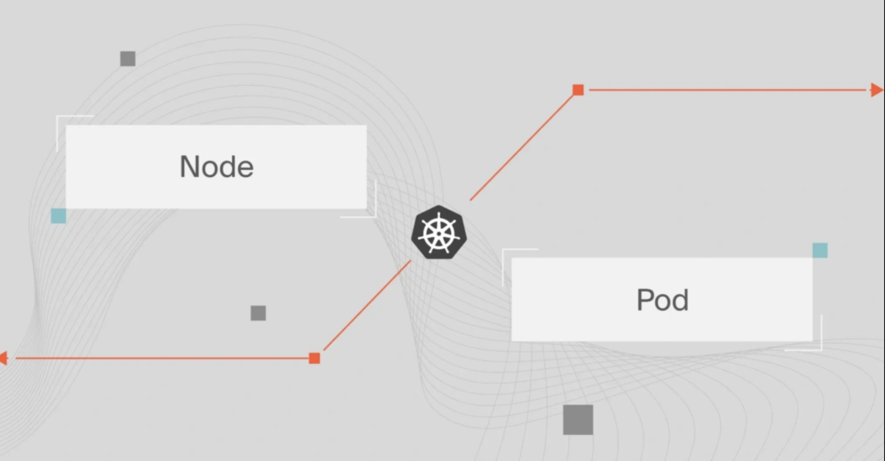
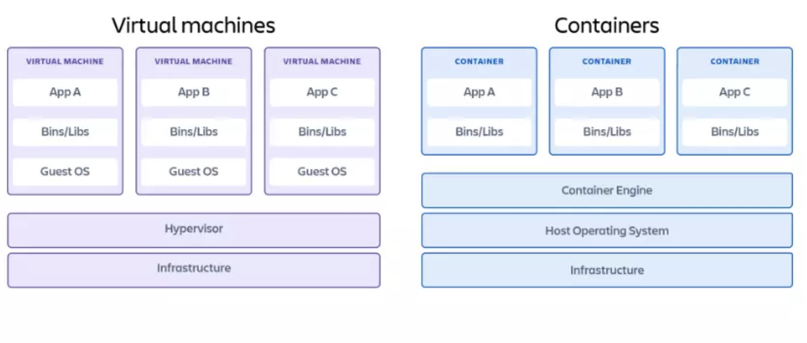
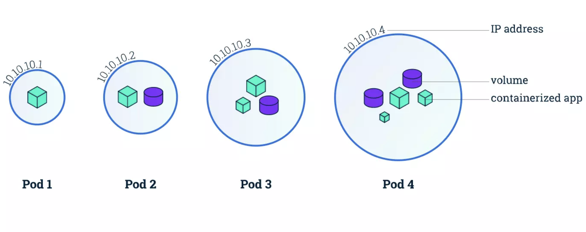
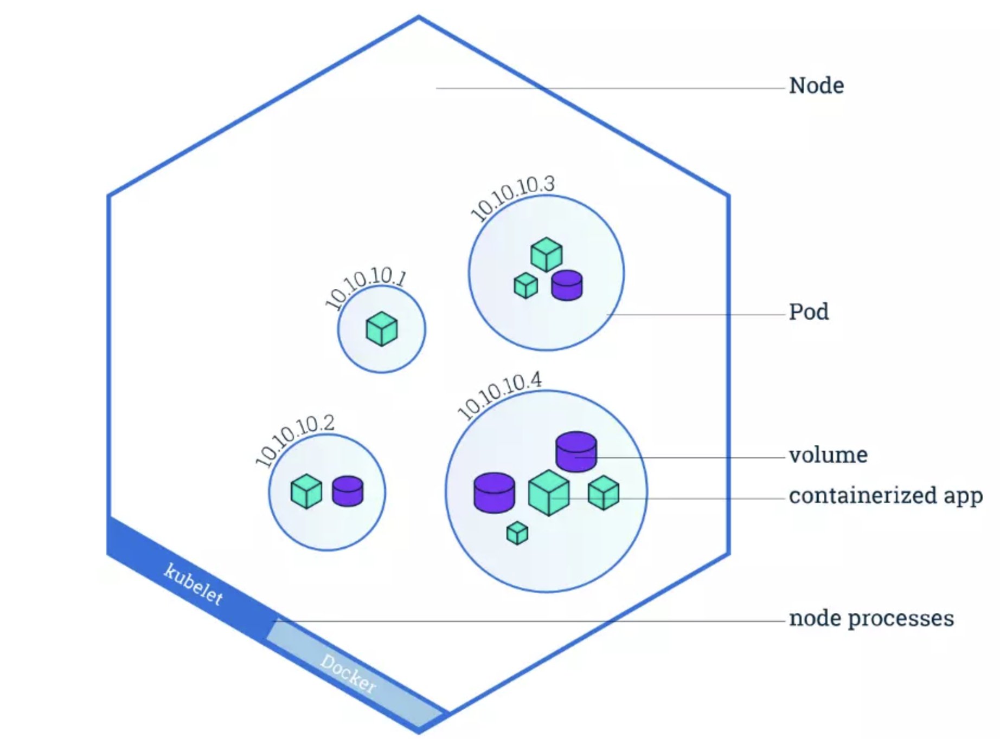
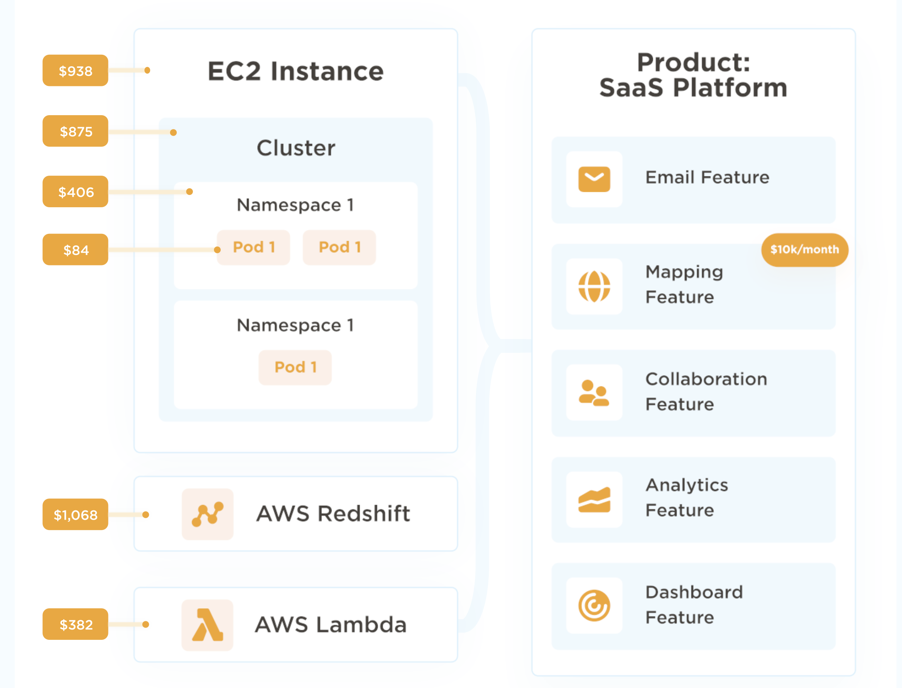
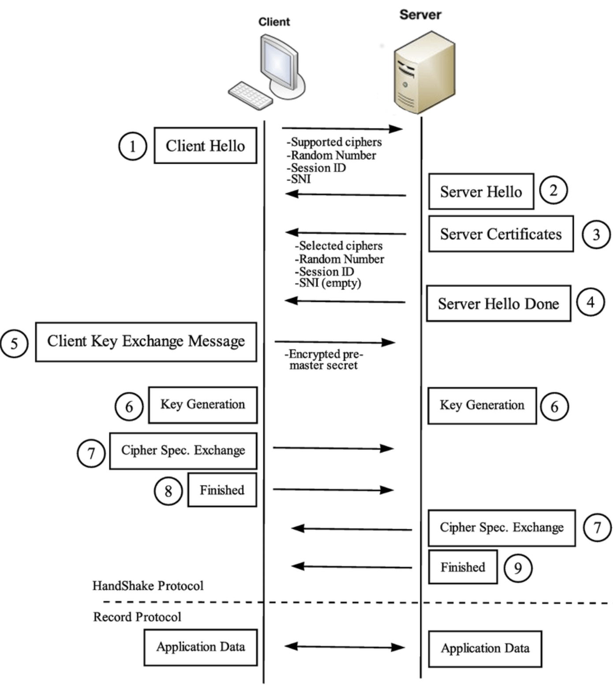

Contractor interview real Questions
Contractor interview real QBackend Questions Top 100
Java backend Q top 100Kafka & RabbitMQ
MQ notesSpring Newbie Notes
Spring Boot Newbie NotesSyllabus
| Session | Topic | Detailed Topics |
|---|---|---|
| 1 | JVM STRING FINAL | 1. Warm Up2. JVM Memory Management 3. JVM, JDK, JRE 4. Garbage Collection 5. String & StringBuilder & StringBuffer 6. Final, Finally, Finalize7. Immutable class (optional: basic syntax of java) |
| 2 | STATIC OOP | 1. Static 2. Marker Interface - Serializable, Cloneable 3. OOP 4. SOLID Principle 5. Reflection 6. Generics |
| 3 | COLLECTION | 1. Array vs ArrayList vs LinkedList 2. Set, TreeSet, LinkedHashSet 3. Map, LinkedHashMap, ConcurrentHashMap(how it works) 4. SynchronizedMap 5. Iterator vs Enumeration |
| 4 | EXCEPTION DESIGN PATTERN | 1. Design Pattern - Singleton, Factory, Observer, Proxy 2. Exception Type - compile, runtime, customized |
| 5 | THREADS | 1. MultiThreads Interaction (Synchronized, Atomic, ThreadLocal, Volatile) 2. Reentrant Lock 3. Executor and ThreadPool, ForkJoinPool 4. Future & CompletableFuture 5. Runnable vs Callable 6. Semaphore vs Mutex |
| 6 | JAVA8,17 | 1. Java 8: Functional Interface, Lambda, Stream API (map, filter, sorted, groupingBy etc), Optional, Default 2. Java 17: Sealed Class, advantage vs limitation, across package |
| 7 | SQL | 1. Primary Key, Normalization 2. Different type of Joins 3. Top asked SQLs - nth highest salary; highest salary each department; employee salary greater than manager 4. Introduce of Stored Procedure and Function 5. Cluster index vs Non - Cluster - Index 6. Explain Plan - what does it do, what can it tell |
| 8 | NOSQL | 1. SQL vs NoSQL 2. MongoDB vs Cassandra introduction3. ACID vs CAP rules explanation |
| 9 | REST API | 1. DispatcherServlet2. Rest API 3. How to create a good rest api 4. Http Error Code: 200, 201, 400, 401, 403, 404, 500, 502, 503, 504 5. Introduction of GraphQL, WebSocket, gRPC6. ReactiveJava |
| 10 | SPRING CORE | 1. IOC/DI 2. Bean Scope 3. Constructor vs Setter vs Field based injection |
| 11 | SPRING ANNOTATIONS | 1. Different spring annotations 2. @Controller vs @RestController 3. @Qualifier, @Primary4. Spring Cache and Retry |
| 12 | SPRING BOOT | 1. How to create spring boot from Scratch 2. Benefit of Spring boot 3. Annotation @SpringBootApplication 4. AutoConfiguration, how to disable 5. Actuator |
| 13 | SPRING BOOT2 | 1. Spring ActiveProfile2. AOP 3. @ExceptionHandler, @ControllerAdvice |
| 14 | DATA ACCESS | 1. JDBC, statement vs PreparedStatement, Datasource2. Hibernate ORM, Session, Cache 3. Optimistic Locking - add version column 4. Association: many - to - many |
| 15 | TRANSACTION JPA | 1. @Transactional - atomic operation 2. Propagation, Isolation 3. JPA naming convention4. Paging and Sorting Using JPA 5. Hibernate Persistence Context |
| 16 | SECURITY | 1. How to implement Security by overriding Spring class 2. Basic Authentication and password encryption 3. JWT Token and workflow 4. Oauth2 workflow5. Authorization based on User role |
| 17 | UNIT TEST |
1. Different Type of Tests in whole project lifecycle 2. Unit Test, Mock 3. Testing Rest Api with Rest Assured |
| 18 | AUTOMATION TEST |
1. BDD - Cucumber - annotations 2. Load Test with JMeter 3. Performance tool JProfiler 4. AB Test |
| 19 | MICROSERVICE | 1. Benefits/Disadvantage of MicroService 2. How to split monolithic to microservice 3. Circuit Breaker - concept, retry, fallback method 4. Load Balancer - concept and algorithms 5. API Gateway 6. Config Server |
| 20 | KAFKA |
1. Kafka - concepts, how it works and how message is sent to partition 2. Consumer Group, assignment strategy 3. Message in Order |
| 21 | KAFKA2 |
1. Kafka Duplicate Message 2. Kafka Message Loss 3. Poison Failure, DLQ 4. Kafka Security (SASL, ACLs, Encrypt etc) |
| 22 | DISTRIBUTED SYSTEM | 1. MicroService: how to communicate between services 2. Saga Pattern3. Monitoring: Splunk, Grafana, Kabana, CloudWatch etc4. System Design: distributed system |
| 23 | DEVOPS | 1. CICD 2. Jenkins pipeline with example 3. Git Commands: squash, cherry - pick etc4. On - Call: PageDuty etc5. How do you solve a production issue with or without log |
| 24 | KUBERNETES |
1. Kubernetes, EKS, WCNP, KubeCtl |
| 25 | CLOUD |
AWS Modules with examples |
Kubernetes
pod vs node in Kubernetes
本文由 简悦 SimpRead 转码， 原文地址 www.cloudzero.com
Kubernetes pods, nodes, and clusters get mixed up. Here’s a guide for beginners or if you just need t……
July 19, 2024 , 10 min read
Kubernetes pods, nodes, and clusters get mixed up. Here’s a simple guide for beginners or if you just need to reaffirm your knowledge of Kubernetes components.

Kubernetes is increasingly becoming the standard way to deploy, run, and maintain cloud-native applications that run inside containers. Kubernetes (K8s) automates most container management tasks, empowering engineers to manage high-performing, modern applications at scale.
Meanwhile, several surveys, including those from VMware and Gartner, suggest that inadequate expertise with Kubernetes has held back organizations from fully adopting containerization. So, maybe you’re wondering how Kubernetes components work.
In that case, we’ve put together a bookmarkable guide on pods, nodes, clusters, and more. Let’s dive right in, starting with the very reason Kubernetes exists; containers.
Quick Summary
Pod | Node | Cluster | |
Description | The smallest deployable unit in a Kubernetes cluster | A physical or virtual machine | A grouping of multiple nodes in a Kubernetes environment |
Role | Isolates containers from underlying servers to boost portability Provides the resources and instructions for how to run containers optimally | Provides the compute resources (CPU, volumes, etc) to run containerized apps | Has the control plane to orchestrate containerized apps through nodes and pods |
What it hosts | Application containers, supporting volumes, and similar IP addresses for logically similar containers | Pods with application containers inside them, kubelet | Nodes containing the pods that host the application containers, control plane, kube-proxy, etc |
What Is A Container?
In software engineering, a container is an executable unit of software that packages and runs an entire application, or portions of it, within itself.
Containers comprise not only the application’s binary files, but also libraries, runtimes, configuration files, and any other dependencies that the application requires to run optimally. Talk about self-sufficiency.

Credit: Containers vs virtual machine architectures
This design enables a container to be an entire application runtime environment unto itself.
As a result, a container isolates the application it hosts from the external environment it runs on. This enables applications running in containers to be built in one environment and deployed in different environments without compatibility problems.
Also, because containers share resources and do not host their own operating system, they are leaner than virtual machines (VMs). This makes deploying containerized applications much quicker and more efficient than on contemporary virtual machines.
What Is A Containerized Application?
In cloud computing, a containerized application refers to an app that has been specially built using cloud-native architecture for running within containers. A container can either host an entire application or small, distributed portions of it (which are known as microservices).
Developing, packaging, and deploying applications in containers is referred to as containerization. Apps that are containerized can run in a variety of environments and devices without causing compatibility problems.
One more thing. Developers can isolate faulty containers and fix them independently before they affect the rest of the application or cause downtime. This is something that is extremely tricky to do with traditional monolithic applications.
What Is A Kubernetes Pod?
A Kubernetes pod is a collection of one or more application containers.
The pod is an additional level of abstraction that provides shared storage (volumes), IP address, communication between containers, and hosts other information about how to run application containers. Check this out:

Credit: Kubernetes Pods architecture by Kubernetes.io
So, containers do not run directly on virtual machines and pods are a way to turn containers on and off.
Containers that must communicate directly to function are housed in the same pod. These containers are also co-scheduled because they work within a similar context. Also, the shared storage volumes enable pods to last through container restarts because they provide persistent data.
Kubernetes also scales or replicates the number of pods up and down to meet changing load/traffic/demand/performance requirements. Similar pods scale together.
Another unique feature of Kubernetes is that rather than creating containers directly, it generates pods that already have containers.
Also, whenever you create a K8s pod, the platform automatically schedules it to run on a Node. This pod will remain active until the specific process completes, resources to support the pod run out, the pod object is removed, or the host node terminates or fails.
Each pod runs inside a Kubernetes node, and each pod can fail over to another, logically similar pod running on a different node in case of failure. And speaking of Kubernetes nodes.
What Is A Kubernetes Node?
A Kubernetes node is either a virtual or physical machine that one or more Kubernetes pods run on. It is a worker machine that contains the necessary services to run pods, including the CPU and memory resources they need to run.
Now, picture this:

Credit: How Kubernetes Nodes work by Kubernetes.io
Each node also comprises three crucial components:
- Kubelet – This is an agent that runs inside each node to ensure pods are running properly, including communications between the Master and nodes.
- Container runtime – This is the software that runs containers. It manages individual containers, including retrieving container images from repositories or registries, unpacking them, and running the application.
- Kube-proxy – This is a network proxy that runs inside each node, managing the networking rules within the node (between its pods) and across the entire Kubernetes cluster.
Here’s what a Cluster is in Kubernetes.
What Is A Kubernetes Cluster?
-
Nodes usually work together in groups. A Kubernetes cluster contains a set of work machines (nodes). The cluster automatically distributes workload among its nodes, enabling seamless scaling.
Here’s that symbiotic relationship again.
A cluster consists of several nodes. The node provides the compute power to run the setup. It can be a virtual machine or a physical machine. A single node can run one or more pods.
Each pod contains one or more containers. A container hosts the application code and all the dependencies the app requires to run properly.
Something else. The cluster also comprises the Kubernetes Control Plane (or Master), which manages each node within it. The control plane is a container orchestration layer where K8s exposes the API and interfaces for defining, deploying, and managing containers’ lifecycles.
The master assesses each node and distributes workloads according to available nodes. This load balancing is automatic, ensures efficiency in performance, and is one of the most popular features of Kubernetes as a container management platform.
You can also run the Kubernetes cluster on different providers’ platforms, such as Amazon’s Elastic Kubernetes Service (EKS), Microsoft’s Azure Kubernetes Service (AKS), or the Google Kubernetes Engine (GKE).
Take The Next Step: View, Track, And Control Your Kubernetes Costs With Confidence
Open-source, highly scalable, and self-healing, Kubernetes is a powerful platform for managing containerized applications. But as Kubernetes components scale to support business growth, Kubernetes cost management tends to get blindsided.
Most cost tools only display your total cloud costs, not how Kubernetes containers contributed. With CloudZero, you can view Kubernetes costs down to the hour as well as by K8s concepts such as, cost per pod, container, microservice, namespace, and cluster costs.

By drilling down to this level of granularity, you are able to find out what people, products, and processes are driving your Kubernetes spending.
You can also combine your containerized and non-containerized costs to simplify your analysis. CloudZero enables you to understand your Kubernetes costs alongside your AWS, Azure, Google Cloud, Snowflake, Databricks, MongoDB, and New Relic spend. Getting the full picture.
You can then decide what to do next to optimize the cost of your containerized applications without compromising performance. CloudZero will even alert you when cost anomalies occurs before you overspend.
to see these CloudZero Kubernetes Cost Analysis capabilities and more!
Kubernetes FAQ
Is a Kubernetes Pod a Container?
Yes, a Kubernetes pod is a group of one or more containers that share storage and networking resources. Pods are the smallest deployable units in Kubernetes and manage containers collectively, allowing them to run in a shared context with shared namespaces.
What is the difference between container node and pod?
A node is a worker machine in Kubernetes, part of a cluster, that runs containers and other Kubernetes components. A pod, on the other hand, is a higher-level abstraction that encapsulates one or more containers and their shared resources, managed collectively within a node.
Can a pod have multiple containers?
Yes, a Kubernetes pod can have multiple containers. Pods are designed to encapsulate closely coupled containers that need to share resources and communicate with each other over localhost. This approach facilitates running multiple containers within the same pod while treating them as a cohesive unit for scheduling, scaling, and management within the Kubernetes cluster.
How many pods run on a node?
The number of Kubernetes pods that can run on a node depends on various factors such as the node’s resources (CPU, memory, etc.), the resource requests and limits set by the pods, and any other applications or system processes running on the node.
Generally, a node can run multiple pods, and the Kubernetes scheduler determines pod placement based on available resources and scheduling policies defined in the cluster configuration.
Security
- How to implement Security by overriding Spring class
- You can implement security in a Spring application by overriding certain Spring security classes. For example, you can extend
WebSecurityConfigurerAdapter - and override methods like
configure(HttpSecurity http)to define custom security configurations such as access rules, authentication mechanisms, etc. - You can also override other classes like
UserDetailsServiceto provide custom user authentication and authorization logic.
- You can implement security in a Spring application by overriding certain Spring security classes. For example, you can extend
- Basic Authentication and password encryption
- Basic authentication is a simple authentication mechanism where the client sends the username and password in the request headers.
- In Spring, it can be configured easily. Password encryption is crucial for security.
- Spring provides various password encoding mechanisms like
BCryptPasswordEncoderto securely hash and store passwords. - When a user registers or changes their password, the password is encrypted and stored in the database, and during authentication, the provided password is encrypted and compared with the stored hash.
- JWT Token and workflow

- JSON Web Token (
JWT) is a widely used token-based authentication and authorization mechanism. - The workflow typically involves
- the client sending username and password to the server for authentication.
- If the authentication is successful, the server generates a
JWTtoken containing user information aspayloadand asignature.- The client then stores the token and sends it in the
headersof subsequent requests. - The server validates the token on each request and authorizes the user based on the information in the token.
- The client then stores the token and sends it in the
- Oauth2 workflow
- OAuth2 is an authorization framework that allows users to grant limited access to their resources on one server to another server without sharing their credentials.
- The typical OAuth2 workflow involves steps like
- the client redirecting the user to the authorization server for authentication and authorization,
- the user granting permission, the authorization server issuing an access token,
- and the client using the access token to access protected resources on the resource server.
- Authorization based on User role
- In a Spring security application, authorization based on user roles can be implemented by assigning different roles to users and configuring access rules based on those roles.
- You can use annotations like
@PreAuthorizeor configure access rules in the security configuration to specify which roles are allowed to access which resources or perform which operations. - For example, you can define that only users with the
ROLE_ADMINrole can access certain administrative endpoints.
- What is XSS attack and how to prevent it?
- XSS (Cross-Site Scripting) is a vulnerability where an attacker injects malicious scripts into a website.
These scripts run on users’ browsers, allowing attackers to steal data or perform actions on behalf of the user. - To prevent XSS, you should:
- Sanitize and escape user input.
- Use Content Security Policy (CSP).
- Set HttpOnly and Secure flags for cookies.
- Avoid inserting user input directly into the HTML without validation.
- XSS (Cross-Site Scripting) is a vulnerability where an attacker injects malicious scripts into a website.
- What is CSRF attack and how to prevent it?
- CSRF (Cross-Site Request Forgery) is an attack where an attacker tricks a user into making unwanted requests to a website on which they are authenticated.
This can result in unauthorized actions, such as changing account settings or making purchases. - To prevent CSRF, you should:
- Use anti-CSRF tokens in forms.
- Implement SameSite cookie attributes.
- Ensure that sensitive actions require additional authentication (like a CAPTCHA).
- Check the
Refererheader to validate requests.
- CSRF (Cross-Site Request Forgery) is an attack where an attacker tricks a user into making unwanted requests to a website on which they are authenticated.
Authorization based on User role using Spring Security
In Spring Security, you can implement role-based authorization by assigning roles to users and restricting access to certain endpoints or methods based on those roles.
Step-by-Step: Role-Based Authorization in Spring
1. Assign Roles to Users
Typically in your UserDetailsService implementation or user entity:
|
⚠️ Prefix roles with
ROLE_— it’s required by Spring Security.
2. Secure Endpoints Based on Role
Using HttpSecurity in a SecurityConfig class:
|
3. Method-Level Authorization (Optional)
Use annotations with @EnableMethodSecurity:
("hasRole('ADMIN')") |
Summary
| Component | Purpose |
|---|---|
SimpleGrantedAuthority |
Assign roles to user |
hasRole("ROLE_NAME") |
Protect endpoints/methods by role |
@PreAuthorize |
Method-level security (optional) |
SecurityFilterChain |
Define path-based access control |
XSS
XSS (Cross-Site Scripting) is a type of security vulnerability where an attacker injects malicious scripts into trusted websites. When a user visits the site, the script runs in their browser, potentially stealing cookies, session tokens, or sensitive data.
Types of XSS
| Type | Description |
|---|---|
| Stored XSS | Malicious script is permanently stored on the server (e.g., in a database or comment). |
| Reflected XSS | Script is immediately returned by the server (e.g., in URL parameters). |
| DOM-based XSS | Script is injected via client-side JavaScript manipulation, without server interaction. |
Example of XSS
function escape(s) { |
如果输入的 s 为 ");alert(1);// ,则将 return <script>console.log("");alert(1);//");</script> , 这就会弹出警告窗口 alert(1) 这就是恶意脚本注入
How to Prevent XSS
1. Escape Output
- Always escape user input before injecting it into HTML, JS, or attributes.
- Use libraries like DOMPurify (for HTML) or encoding functions (
encodeURIComponent, etc).
2. Use Safe APIs
- Prefer
textContent,createTextNodeoverinnerHTML.
3. Validate Input
- Use server-side and client-side validation to restrict allowed content.
4. Use Content Security Policy (CSP)
- Prevents execution of inline scripts or loading from untrusted sources.
5. Sanitize User Input
- Strip or neutralize dangerous code via input sanitization libraries (e.g., DOMPurify).
Summary
XSS exploits trust between users and websites.
Defense = sanitize, escape, validate, and use secure APIs.
CSRF
CSRF（Cross-Site Request Forgery），即跨站请求伪造，是一种常见的网络攻击方式。下面为你详细解释 CSRF 但不涉及本项目代码：
和JWT的关系
在某些情况下，比如使用无状态的 RESTful API（如使用 JWT 进行身份验证，是无状态的），可以考虑禁用 CSRF 防护，因为 JWT 本身已经提供了一定的安全性，且 RESTful API 通常通过其他方式（如令牌验证）来确保请求的合法性。
但在一些有状态的应用中，如传统的基于会话的 Web 应用，通常需要开启 CSRF 防护
攻击原理
- 用户认证：用户在访问某个受信任的网站 A 时，进行了登录操作，网站 A 会在用户的浏览器中保存用户的认证信息，比如会话 Cookie 。
- 恶意网站诱导：攻击者构建一个恶意网站 B，当用户在访问恶意网站 B 时，网站 B 会利用一些手段（比如自动提交表单等）向受信任的网站 A 发送一个请求。由于用户的浏览器中保存了网站 A 的认证信息，这个请求会携带用户的认证信息（如 Cookie）发送到网站 A。
- 网站 A 处理请求：网站 A 收到请求后，因为请求中包含了用户的合法认证信息，会误以为是用户自己发起的请求，从而执行相应的操作，比如修改用户的密码、转账等。
常见的攻击场景
- 自动提交表单：恶意网站包含一个隐藏的表单，表单的 action 属性指向受信任网站的某个敏感操作接口，当用户访问恶意网站时，表单会自动提交，从而触发对受信任网站的攻击请求。
- 图片标签攻击：攻击者在恶意网站中使用
<img>标签，将其src属性设置为受信任网站的某个敏感操作接口，当用户访问恶意网站时，浏览器会自动请求该图片，从而触发对受信任网站的攻击请求。
防范措施
使用 CSRF Token
- 原理：服务器在生成页面时，会为每个用户的请求生成一个唯一的
CSRF Token，并将其嵌入到页面中（比如作为隐藏表单字段或者请求头）。当用户提交表单或者发送请求时，必须携带这个CSRF Token。服务器在接收到请求时，会验证请求中的CSRF Token是否与服务器生成的一致，如果不一致则拒绝请求。 - 示例：在表单中添加
CSRF Token：<form action="/transfer" method="post">
<input type="hidden" name="csrf_token" value="{{ csrf_token }}">
<!-- 其他表单字段 -->
<input type="submit" value="Transfer">
</form>
- 原理：服务器在生成页面时，会为每个用户的请求生成一个唯一的
检查请求的
Referer头- 原理：服务器在接收到请求时，检查请求的
Referer头，确保请求是从本网站的页面发起的。如果Referer头为空或者指向其他域名，则拒绝请求。 - 缺点：
Referer头可以被篡改，并且有些用户可能会禁用Referer头，因此这种方法不是非常可靠，通常作为辅助手段使用。
- 原理：服务器在接收到请求时，检查请求的
- 使用 SameSite Cookie 属性
- 原理：SameSite 是一个 Cookie 属性，用于控制 Cookie 在跨站请求时的发送行为。可以将 Cookie 的
SameSite属性设置为Strict或Lax。Strict表示 Cookie 只能在同一站点的请求中发送，Lax表示 Cookie 可以在一些安全的跨站请求（如 GET 请求）中发送。 - 示例：在设置 Cookie 时添加
SameSite属性：// Java 示例
Cookie cookie = new Cookie("session_id", "123456");
cookie.setSameSite("Strict");
response.addCookie(cookie);
- 原理：SameSite 是一个 Cookie 属性，用于控制 Cookie 在跨站请求时的发送行为。可以将 Cookie 的
总之，CSRF 是一种严重的安全威胁，开发人员在开发 Web 应用时需要采取有效的防范措施来保护用户的信息安全。
SSL 3 ways handshake

It goes roughly as follows:
- The ‘client hello’ message: The client initiates the handshake by sending a “hello” message to the server. The message will include which TLS version the client supports, the cipher suites supported, and a string of random bytes known as the “client random.”
- The ‘server hello’ message: In reply to the client hello message, the server sends a message containing the server’s SSL certificate, the server’s chosen cipher suite, and the “server random,” another random string of bytes that’s generated by the server.
- Authentication: The client verifies the server’s SSL certificate with the certificate authority that issued it. This confirms that the server is who it says it is, and that the client is interacting with the actual owner of the domain.
- The premaster secret: The client sends one more random string of bytes, the “premaster secret.” The premaster secret is encrypted with the public key and can only be decrypted with the private key by the server. (The client gets the public key from the server’s SSL certificate.)
- Private key used: The server decrypts the premaster secret.
- Session keys created: Both client and server generate session keys from the client random, the server random, and the premaster secret. They should arrive at the same results.
- Client is ready: The client sends a “finished” message that is encrypted with a session key.
- Server is ready: The server sends a “finished” message encrypted with a session key.
- Secure symmetric encryption achieved: The handshake is completed, and communication continues using the session keys.
REST API
RESTful API Versioning Strategy
I’ve implemented API versioning to ensure backward compatibility as the API evolves. The primary goal is to allow clients to continue using old versions while new features or changes are introduced in newer versions.
Common strategies I’ve used:
1. URI Path Versioning (most common in my experience)
- Example:
GET /api/v1/users - Pros: Easy to implement, clear version separation.
- Cons: Breaks RESTful resource URIs; not as flexible for granular versioning.
2. Header Versioning (for internal or advanced clients)
- Example:
GET /userswith headerAPI-Version: 2 - Pros: Keeps URIs clean; supports gradual version rollouts.
- Cons: Harder to test/debug; tooling may not support.
3. Query Parameter Versioning (used sparingly)
- Example:
GET /users?version=2 - Pros: Simple to implement.
- Cons: Can be misused; not ideal for long-term versioning.
Strategy Considerations:
- I use URI path versioning for public APIs where clarity and long-term support matter most.
- For internal or mobile clients, I prefer header versioning to avoid breaking changes and allow A/B testing.
- I always maintain proper documentation for each version and use semantic versioning principles where feasible (major changes require a new version).
URI path versioning example
|
This isolates version logic cleanly and allows parallel support.
Header-Based API Versioning Example
This approach uses @RequestMapping conditions to route based on custom headers, typically like API-Version: 1.
Controller Implementation:
|
DTO Classes:
public class UserDto { |
Client Request Examples:
GET /api/users |
GET /api/users |
Pros of Header-Based Versioning:
- Keeps the endpoint clean (
/api/users) - Allows smooth version rollout
- Compatible with gateway-based version negotiation
Caveat: Requires clients to be aware of and explicitly set headers, which may complicate browser-based calls or debugging.
header-based API versioning using Spring Cloud Gateway
Here is a practical example of implementing header-based API versioning using Spring Cloud Gateway alongside Spring Boot controllers to route requests based on the API-Version header.
Spring Cloud Gateway Configuration (application.yml)
spring: |
- Requests with header
API-Version: 1route to backend service on port 8081 (v1). - Requests with header
API-Version: 2route to backend service on port 8082 (v2).
Spring Boot User Service V1 (running on port 8081)
|
Spring Boot User Service V2 (running on port 8082)
|
Summary
- Gateway routes requests based on
API-Versionheader to different backend versions. - Backend services implement respective API versions independently.
- This enables seamless side-by-side deployment and independent scaling.
- Clients specify version by setting the
API-VersionHTTP header.
DispatcherServlet
Definition
DispatcherServlet is a key component in the Spring Web MVC framework. It serves as the front - controller in a Spring - based web application. A front - controller is a single servlet that receives all HTTP requests and then dispatches them to the appropriate handlers (controllers) based on the request’s URL, HTTP method, and other criteria.
Function
- Request Routing: It maps incoming requests to the appropriate
@Controllerclasses and their methods using the configured handler mappings. For example, it can match a request to a specific controller method based on the URL pattern defined in the@RequestMappingannotation. - View Resolution: After a controller method processes the request and returns a logical view name, the
DispatcherServletuses a view resolver to map this logical name to an actual view (such as a JSP page or a Thymeleaf template) and renders the response. - Intercepting and Pre - processing: It can also use interceptors to perform pre - processing and post - processing tasks on requests and responses, like logging, authentication checks, etc.
Rest API
Definition
REST (Representational State Transfer) is an architectural style for building web services. A REST API (Application Programming Interface) is a set of rules and conventions for creating and consuming web services based on the REST principles.
Characteristics
- Stateless: Each request from a client to a server must contain all the information necessary to understand and process the request. The server does not store any client - specific state between requests.
- Resource - Oriented: Resources are the key abstractions in a REST API. Resources can be things like users, products, or orders, and are identified by unique URIs (Uniform Resource Identifiers).
- HTTP Verbs: REST APIs use standard HTTP methods (verbs) to perform operations on resources. For example,
GETis used to retrieve a resource,POSTto create a new resource,PUTto update an existing resource, andDELETEto remove a resource.
How to create a good REST API
Design Principles
- Use Clear and Descriptive URIs: URIs should clearly represent the resources. For example, use
/usersto represent a collection of users and/users/{userId}to represent a specific user. - Follow HTTP Verbs Correctly: Use
GETfor retrieval,POSTfor creation,PUTfor full - update,PATCHfor partial - update, andDELETEfor deletion. - Return Appropriate HTTP Status Codes: Indicate the result of the request clearly. For example, return 200 for successful retrievals, 201 for successful creations, and 4xx or 5xx for errors.
- Provide Good Documentation: Use tools like Swagger to generate documentation that explains the API endpoints, their input parameters, and expected output.
Security and Performance
- Authentication and Authorization: Implement proper authentication mechanisms (e.g., OAuth, JWT) to ensure that only authorized users can access the API.
- Caching: Implement caching strategies to reduce the load on the server and improve response times.
HTTP Error Codes
- 200 OK: Indicates that the request has succeeded. It is commonly used for successful
GETrequests to retrieve a resource or successfulPUT/PATCHrequests to update a resource. - 201 Created: Used when a new resource has been successfully created. For example, when a client sends a
POSTrequest to create a new user, and the server successfully creates the user, it returns a 201 status code. - 400 Bad Request: Signifies that the server cannot process the request due to a client - side error, such as malformed request syntax, invalid request message framing, or deceptive request routing.
- 401 Unauthorized: Indicates that the request requires user authentication. The client needs to provide valid credentials to access the requested resource.
- 403 Forbidden: The client is authenticated, but it does not have permission to access the requested resource. For example, a regular user trying to access an administrative - only endpoint.
- 404 Not Found: The requested resource could not be found on the server. This might be because the URL is incorrect or the resource has been deleted.
- 500 Internal Server Error: A generic error message indicating that the server encountered an unexpected condition that prevented it from fulfilling the request. It could be due to a programming error, database issues, etc.
- 502 Bad Gateway: The server, while acting as a gateway or proxy, received an invalid response from an upstream server.
- 503 Service Unavailable: The server is currently unable to handle the request due to temporary overloading or maintenance. The client may try again later.
- 504 Gateway Timeout: The server, while acting as a gateway or proxy, did not receive a timely response from an upstream server.
Introduction of GraphQL, WebSocket, gRPC
GraphQL
- Definition: GraphQL is a query language for APIs and a runtime for fulfilling those queries with your existing data. It allows clients to specify exactly what data they need from an API, reducing over - fetching and under - fetching of data.
- Advantages: It provides a more efficient way of data retrieval compared to traditional REST APIs, especially in complex applications where clients may need different subsets of data. It also has a strong type system and can be introspected by clients.
以下是关于 GraphQL 和 RESTful 的对比表格，从多个方面详细阐述了它们的特点和差异：
| 对比维度 | RESTful | GraphQL |
|---|---|---|
| 数据获取方式 | 通常以固定的端点（Endpoints）获取资源，每个端点返回固定结构的数据。例如，/users 端点返回所有用户列表，/users/{id} 返回特定用户详细信息。如果客户端需要多个不同资源的数据，可能需要多次请求不同的端点。 |
客户端可以精确指定需要的数据字段，服务器只返回所请求的数据。通过在查询中定义字段，可以在一次请求中获取多个相关资源的数据，避免过度获取或不足获取数据的问题。 |
| 数据传输量 | 可能会返回过多不必要的数据（过度获取），或者客户端需要多次请求才能获取完整所需数据（不足获取），导致数据传输量较大或请求次数增多。例如，客户端只需要用户的姓名和邮箱，但 /users/{id} 端点返回了用户的所有详细信息，包括地址、电话等。 |
只返回客户端请求的数据字段，减少了不必要的数据传输，提高了数据传输效率，尤其在移动设备等带宽有限的场景下更具优势。 |
| 版本控制 | 一般通过在 URL 中添加版本号（如 /v1/users、/v2/users）来进行版本控制。新的版本可能会对端点的结构和功能进行修改，客户端需要明确区分不同版本并进行相应调整。 |
由于客户端自定义查询，服务器端的字段增减或修改不一定会影响客户端已有的查询。如果需要对数据模型进行修改，可以在不破坏现有客户端查询的前提下进行，因此在版本控制方面相对灵活，不需要像 RESTful 那样严格的版本区分。 |
| 缓存策略 | 可以利用 HTTP 缓存机制，如 Cache-Control、ETag 等进行缓存。但由于每个端点返回的数据结构相对固定，缓存粒度较粗，可能会出现缓存失效或缓存不命中的情况。 |
缓存相对复杂，因为每个客户端的查询可能不同。可以通过在服务器端实现自定义的缓存策略，针对具体的查询进行缓存，但需要更多的开发和维护工作。 |
| 错误处理 | 通常使用 HTTP 状态码来表示请求的结果，如 200 表示成功，404 表示资源未找到，500 表示服务器内部错误等。对于更详细的错误信息，可能需要在响应体中返回。 |
可以在响应中返回详细的错误信息，包括错误位置（在查询中的位置）和错误描述，帮助客户端更准确地定位和处理错误。 |
| 开发效率 | 开发人员需要为每个资源和操作定义端点，当需求变化或新增功能时，可能需要修改或新增多个端点，开发和维护成本较高。 | 开发人员定义数据模型和 GraphQL 模式（Schema），客户端根据模式进行查询。由于客户端有更多的自主性，服务器端的开发和修改相对集中在模式的更新上，一定程度上提高了开发效率。 |
| 学习曲线 | 基于 HTTP 和 REST 原则，概念相对简单直观，开发人员容易理解和上手，尤其对于有 Web 开发经验的人员。 | 需要学习 GraphQL 的语法、模式定义、查询和变更（Mutation）等概念，对于初学者来说可能有一定的学习成本，但掌握后可以更灵活地进行数据交互。 |
| 生态系统和工具支持 | 有丰富的工具和框架支持，如 Express（Node.js）、Django REST framework（Python）等，并且与现有的 Web 技术和基础设施兼容性好。 | 生态系统在不断发展壮大，有许多优秀的客户端和服务器端库，如 Apollo Server（Node.js）、Relay（React）等，但相对 RESTful 生态系统的成熟度和普及度可能稍逊一筹。 |
以下是一个简单的示意图来直观展示 GraphQL 和 RESTful 在数据获取上的差异：
RESTful 数据获取示例：客户端 ----> GET /users/{id} ----> 服务器
（获取用户详细信息，可能包含过多不需要字段）
客户端 ----> GET /posts?userId={id} ----> 服务器
（获取该用户的文章，需额外请求）
GraphQL 数据获取示例：客户端 ----> POST /graphql {
user(id: "{id}") {
name
email
posts {
title
content
}
}
} ----> 服务器
（一次请求获取用户信息及相关文章，精确获取所需字段）
希望以上表格和说明能帮助你更好地理解 GraphQL 和 RESTful 的区别。如果还有其他疑问，可以继续向我提问。
WebSocket
- Definition: WebSocket is a communication protocol that provides full - duplex communication channels over a single TCP connection. It enables real - time communication between a client and a server.
- Advantages: It reduces the overhead of traditional HTTP requests by maintaining a persistent connection, which is suitable for applications that require real - time updates, such as chat applications, online gaming, and live dashboards.
gRPC
- Definition: gRPC is a high - performance, open - source universal RPC (Remote Procedure Call) framework. It uses Protocol Buffers as the interface definition language and serialization format.
- Advantages: It offers high performance, low latency, and strong typing. It is suitable for microservices architectures where efficient communication between services is crucial.
ReactiveJava响应式编程
Java响应式编程一般基于Reactive Streams规范，常用实现包括Project Reactor和RxJava。实现步骤和核心思路如下：
核心思路
- 声明式编程：定义数据流的处理逻辑（过滤、转换、合并等），而非命令式地逐步操作。
- 异步非阻塞：数据生产和消费异步执行，不阻塞线程，提高资源利用率。
- 背压（Back-pressure）支持：消费者控制生产者的数据流速，避免过载。
- 流（Flux/Observable）和单值（Mono/Single）区分：分别表示多值和单值异步数据流。
实现步骤（以Project Reactor为例）
- 引入依赖
<dependency> |
- 创建数据流
- 使用
Flux表示多元素流，Mono表示单元素流。
Flux<String> flux = Flux.just("A", "B", "C"); |
- 链式操作处理数据
- 过滤、转换、合并、延迟等。
flux.filter(s -> s.startsWith("A")) |
- 异步执行调度
- 通过
scheduler切换线程池，实现异步非阻塞。
flux.publishOn(Schedulers.boundedElastic()) |
- 处理背压
- 使用操作符如
onBackpressureBuffer(),onBackpressureDrop()等。
flux.onBackpressureBuffer(100); |
- 与外部系统集成
- 结合响应式数据库驱动（R2DBC）、消息队列（Reactor Kafka）、Web框架（Spring WebFlux）等。
简单示例
Flux.range(1, 10) |
总结
实现Java响应式编程，核心是基于Flux和Mono等响应式类型，结合声明式操作符和异步调度。通过背压机制保证系统稳健。Project Reactor和RxJava是最主流的两种实现，推荐优先掌握Reactor，尤其在Spring生态中应用广泛。
好的，下面给你一个处理背压的具体、完整 Java 示例，使用 Project Reactor 的 Flux 实现。
处理背压back-pressure的例子
下面给你一个基于 Kafka 的 Java 实时订单系统的完整示例，重点展示如何使用 Reactor Kafka 来处理背压（Back-pressure），防止消费者过载。
场景描述
- 订单从 Kafka 主题
orders中流入。 - 每条订单都需要进行复杂业务处理（如写数据库）。
- 如果消费处理速度跟不上 Kafka 推送速度，我们需要做背压处理。
技术栈
- Kafka：消息中间件，用于高吞吐实时流。
- Reactor Kafka：响应式 Kafka 客户端，支持 back-pressure。
- Spring Boot（可选）：集成方便。
- R2DBC（可选）：响应式数据库连接。
示例代码（核心逻辑）
import reactor.kafka.receiver.KafkaReceiver; |
关键点说明
| 技术/操作 | 作用 |
|---|---|
KafkaReceiver.receive() |
返回一个 Flux |
onBackpressureBuffer(1000) |
如果消费不及时，最多缓存 1000 条订单；超过的丢弃或报警 |
flatMap(..., 10) |
同时最多处理 10 条订单，控制并发，间接实现 back-pressure |
acknowledge() |
手动提交 offset，确保“处理完才提交” |
实战建议
- 数据入库用 R2DBC 实现真正的 end-to-end 异步。
- 若不想丢数据，可将超出 back-pressure 的数据写入 Dead Letter Topic。
- 结合指标系统（如 Prometheus）监控 lag、吞吐、队列大小。
总结
这是一个典型的 响应式 Kafka + 背压控制 + 并发限流 的应用场景，适合用于订单、支付、风控等高并发实时业务中。相较传统阻塞消费者，响应式消费者更能充分利用资源、控制负载、保证系统稳定性。
Test
1. Different Type of Tests in whole project lifecycle
- Unit Tests: These are the most granular level of tests. They focus on testing individual units of code, such as a single function, method, or class. Unit tests are usually written by developers and are aimed at verifying that a particular piece of code behaves as expected in isolation. They help in catching bugs early in the development process and make the code easier to maintain.
- Integration Tests: These tests check how different components or modules of the system work together. They ensure that the interfaces between various parts of the application are functioning correctly. For example, in a software system with a database layer, a business logic layer, and a presentation layer, integration tests would verify that data can flow properly between these layers.
- System Tests: System tests evaluate the entire system as a whole to ensure that it meets the specified requirements. They simulate real-world scenarios and user interactions to test the system’s functionality, performance, and usability. This includes testing all the components together in the production-like environment.
- Acceptance Tests: These tests are performed to determine whether the system meets the business requirements and is acceptable to the end-users or stakeholders. Acceptance tests can be user acceptance tests (UAT), where end-users test the system to see if it meets their needs, or contract acceptance tests, which are based on the requirements specified in a contract.
- Regression Tests: After making changes to the system, such as bug fixes or new feature implementations, regression tests are run to ensure that the existing functionality has not been broken. They are a subset of the overall test suite that focuses on the areas of the system that are likely to be affected by the changes.
2. Unit Test, Mock
- Unit Test: A unit test is a piece of code that exercises a specific unit of functionality in an isolated way. It provides a set of inputs to the unit under test and verifies that the output is as expected. Unit tests should be fast, independent, and repeatable. For example, in a Java application, a unit test for a method that calculates the sum of two numbers would provide different pairs of numbers as inputs and check if the calculated sum is correct.
- Mock: In unit testing, a mock is an object that mimics the behavior of a real object, such as a database, a web service, or another component. Mocks are used when the real object is difficult to create, expensive to set up, or not available during testing. For instance, if a unit of code depends on a database call, instead of actually connecting to the database, a mock object can be used to return predefined data. This allows the unit test to focus on testing the logic of the unit under test without being affected by the external dependencies.
3. Testing Rest Api with Rest Assured
Rest Assured is a Java library used for testing RESTful APIs. It simplifies the process of sending HTTP requests to an API and validating the responses.
- Sending Requests: With Rest Assured, you can easily send different types of HTTP requests like GET, POST, PUT, DELETE, etc. For example, to send a GET request to an API endpoint, you can use code like
given().when().get("https://example.com/api/endpoint").then(); - Validating Responses: You can validate various aspects of the response, such as the status code (e.g.,
then().statusCode(200);to check if the response has a 200 status code), the headers, and the body. You can use methods to extract data from the response body and perform assertions on it. For instance, if the API returns JSON data, you can use JsonPath expressions in Rest Assured to extract and validate specific fields in the JSON.
4. AUTOMATION TEST
- BDD - Cucumber - annotations: Behavior-Driven Development (BDD) is an approach that focuses on defining the behavior of the system from the perspective of the stakeholders. Cucumber is a popular tool for implementing BDD in Java (and other languages). Annotations in Cucumber are used to mark different parts of the feature files and step definitions. For example,
@Given,@When,@Thenare commonly used annotations in step definitions.@Givenis used to set up the preconditions,@Whendescribes the action being performed, and@Thenis used to define the expected outcome. Feature files written in Gherkin language (a simple syntax used by Cucumber) use these annotations to describe the behavior of the system in a human-readable format. - Load Test with JMeter: Apache JMeter is a tool used for load testing web applications, web services, and other types of applications. It can simulate a large number of concurrent users sending requests to the application to measure its performance under load. You can configure JMeter to define the number of threads (simulating users), the ramp-up period (how quickly the users are added), and the duration of the test. It can generate detailed reports on metrics such as response times, throughput, and error rates, helping you identify bottlenecks in the application.
- Performance tool JProfiler: JProfiler is a powerful Java profiling tool used for performance analysis. It can help you identify performance issues in your Java applications by analyzing memory usage, CPU utilization, and thread behavior. It allows you to take snapshots of the application’s state at different times, trace method calls, and find memory leaks. You can use JProfiler to optimize your code by identifying methods that consume a lot of resources and improving their performance.
- AB Test: AB testing is a method of comparing two versions (A and B) of a web page, application feature, or marketing campaign to determine which one performs better. In AB testing, a random subset of users is shown version A, and another random subset is shown version B. Metrics such as click-through rates, conversion rates, or user engagement are then measured for each version. Based on the results, you can decide which version to implement permanently. AB testing is often used in web development and digital marketing to make data-driven decisions about changes to the product or service.
Database
- What is data modeling? Why do we need it? When would you need it?
- What is primary key? How is it different from unique key?
- What is normalization? Why do you need to normalize?
- What does data redundancy mean? Can you give an example of each?
- What is database integrity? Why do you need it?
- What are joins and explain different types of joins in detail.
- Explain indexes and why are they needed?
- If we have 1B data in our relational database and we do not want to fetch all at once. What are the ways that we can partition the data rows?
Explain clustered and non-clustered index and their differences.
1. Clustered Index
Definition
A clustered index determines the physical order of data storage in a table. In other words, the rows of the table are physically arranged on disk in the order of the clustered index key. A table can have only one clustered index because there can be only one physical ordering of the data rows.
How it Works
- Index Structure: The clustered index is often implemented as a B - tree data structure. The leaf nodes of the B - tree contain the actual data rows of the table, sorted according to the index key.
- Data Retrieval: When you query data using the columns in the clustered index, the database can quickly locate the relevant rows because they are physically stored in the order of the index. For example, if you have a
Customerstable with a clustered index on theCustomerIDcolumn, and you query for a specificCustomerID, the database can efficiently navigate through the B - tree to find the corresponding row.
Example
-- Create a table with a clustered index on the ID column |
In this example, the ProductID column is the clustered index. The rows in the Products table will be physically sorted by the ProductID value.
2. Non - Clustered Index
Definition
A non - clustered index is a separate structure from the actual data rows. It contains a copy of the indexed columns and a pointer to the location of the corresponding data row in the table. A table can have multiple non - clustered indexes.
How it Works
- Index Structure: Similar to a clustered index, a non - clustered index is also typically implemented as a B - tree. However, the leaf nodes of the non - clustered index do not contain the actual data rows but rather pointers to the data rows in the table.
- Data Retrieval: When you query data using the columns in a non - clustered index, the database first searches the non - clustered index to find the pointers to the relevant data rows. Then it uses these pointers to access the actual data rows in the table. This additional step of accessing the data rows can make non - clustered index lookups slightly slower than clustered index lookups for large datasets.
Example
-- Create a table |
In this example, the idx_CustomerID is a non - clustered index on the CustomerID column. The index stores the CustomerID values and pointers to the corresponding rows in the Orders table.
3. Differences between Clustered and Non - Clustered Indexes
Physical Order of Data
- Clustered Index: Determines the physical order of data storage in the table. The data rows are physically sorted according to the clustered index key.
- Non - Clustered Index: Does not affect the physical order of data in the table. It is a separate structure that points to the data rows.
Number of Indexes per Table
- Clustered Index: A table can have only one clustered index because there can be only one physical ordering of the data.
- Non - Clustered Index: A table can have multiple non - clustered indexes. You can create non - clustered indexes on different columns or combinations of columns to improve query performance for various types of queries.
Storage Space
- Clustered Index: Since it stores the actual data rows, it generally requires more storage space compared to a non - clustered index.
- Non - Clustered Index: Stores only the indexed columns and pointers to the data rows, so it usually requires less storage space.
Query Performance
- Clustered Index: Is very efficient for range queries (e.g., retrieving all rows where the index value is between a certain range) because the data is physically sorted. It also has an advantage for queries that return a large number of rows.
- Non - Clustered Index: Is useful for queries that filter on a small subset of data using the indexed columns. However, for queries that need to access a large number of rows, the additional step of following the pointers to the data rows can make it slower than using a clustered index.
Insert, Update, and Delete Operations
- Clustered Index: Inserting, updating, or deleting rows can be more expensive because it may require re - arranging the physical order of the data on disk.
- Non - Clustered Index: These operations are generally less expensive because they only involve updating the non - clustered index structure and the pointers, without affecting the physical order of the data.
What are normal forms
In the context of databases, “NF” usually stands for “Normal Form”. Normal forms are used in database design to organize data in a way that reduces data redundancy, improves data integrity, and makes the database more efficient and easier to manage. Some of the commonly known normal forms are:
- First Normal Form (1NF): A relation is in 1NF if it has atomic values, meaning that each cell in the table contains only a single value and not a set of values. For example, a table where a column stores multiple phone numbers separated by commas would not be in 1NF.
- Second Normal Form (2NF): A relation is in 2NF if it is in 1NF and all non-key attributes are fully functionally dependent on the primary key. This means that no non-key attribute should depend only on a part of the primary key in case of a composite primary key.
- Third Normal Form (3NF): A relation is in 3NF if it is in 2NF and there is no transitive dependency of non-key attributes on the primary key. That is, a non-key attribute should not depend on another non-key attribute.
- Boyce-Codd Normal Form (BCNF): BCNF is a stronger version of 3NF. A relation is in BCNF if for every functional dependency X → Y, X is a superkey. In other words, every determinant must be a candidate key.
- Fourth Normal Form (4NF): A relation is in 4NF if it is in BCNF and there are no non-trivial multivalued dependencies.
1. Examples of Normalization
First Normal Form (1NF)
Original Table (Not in 1NF):
Suppose we have a Students table that stores information about students and their hobbies.
| Student ID | Student Name | Hobbies |
|---|---|---|
| 1 | John | Reading, Painting |
| 2 | Jane | Singing, Dancing |
The Hobbies column contains multiple values separated by commas, which violates 1NF.
Converted to 1NF:
We create a new table structure.
Students Table:
| Student ID | Student Name |
|---|---|
| 1 | John |
| 2 | Jane |
StudentHobbies Table:
| Student ID | Hobby |
|---|---|
| 1 | Reading |
| 1 | Painting |
| 2 | Singing |
| 2 | Dancing |
Second Normal Form (2NF)
Original Table (Violating 2NF):
Consider an Orders table with a composite primary key (Order ID, Product ID).
| Order ID | Product ID | Product Name | Order Quantity |
|---|---|---|---|
| 1 | 101 | Laptop | 2 |
| 1 | 102 | Mouse | 3 |
| 2 | 101 | Laptop | 1 |
The Product Name depends only on the Product ID (part of the composite primary key), violating 2NF.
Converted to 2NF:
Products Table:
| Product ID | Product Name |
|---|---|
| 101 | Laptop |
| 102 | Mouse |
OrderDetails Table:
| Order ID | Product ID | Order Quantity |
|---|---|---|
| 1 | 101 | 2 |
| 1 | 102 | 3 |
| 2 | 101 | 1 |
Third Normal Form (3NF)
Original Table (Violating 3NF):
Let’s have an Employees table.
| Employee ID | Department ID | Department Name | Employee Salary |
|---|---|---|---|
| 1 | 1 | IT | 5000 |
| 2 | 1 | IT | 6000 |
| 3 | 2 | HR | 4500 |
The Department Name is transitively dependent on the Employee ID through the Department ID, violating 3NF.
Converted to 3NF:
Departments Table:
| Department ID | Department Name |
|---|---|
| 1 | IT |
| 2 | HR |
Employees Table:
| Employee ID | Department ID | Employee Salary |
|---|---|---|
| 1 | 1 | 5000 |
| 2 | 1 | 6000 |
| 3 | 2 | 4500 |
2. Examples of Database Integrity
Entity Integrity
- Explanation: Ensures that each row in a table is uniquely identifiable, usually through a primary key.
- Example: In a
Customerstable, theCustomer IDis set as the primary key.CREATE TABLE Customers (
Customer ID INT PRIMARY KEY,
Customer Name VARCHAR(100),
Email VARCHAR(100)
);
If you try to insert a new row with an existing Customer ID, the database will reject the insert operation because it violates entity integrity.
Referential Integrity
- Explanation: Maintains the consistency between related tables. A foreign key in one table must match a primary key value in another table.
- Example: Consider a
Orderstable and aCustomerstable. TheOrderstable has a foreign keyCustomer IDthat references theCustomer IDin theCustomerstable.CREATE TABLE Customers (
Customer ID INT PRIMARY KEY,
Customer Name VARCHAR(100)
);
CREATE TABLE Orders (
Order ID INT PRIMARY KEY,
Customer ID INT,
Order Date DATE,
FOREIGN KEY (Customer ID) REFERENCES Customers(Customer ID)
);
If you try to insert an order with a Customer ID that does not exist in the Customers table, the database will not allow it due to referential integrity.
Domain Integrity
- Explanation: Ensures that the data entered into a column falls within an acceptable range of values.
- Example: In a
Productstable, thePricecolumn should only accept positive values.CREATE TABLE Products (
Product ID INT PRIMARY KEY,
Product Name VARCHAR(100),
Price DECIMAL(10, 2) CHECK (Price > 0)
);
If you try to insert a product with a negative price, the database will reject the insert because it violates domain integrity.
How do you represent a multi-valued attribute in a database?
A multi - valued attribute is an attribute that can have multiple values for a single entity. Here are the common ways to represent multi - valued attributes in different types of databases:
Relational Databases
1. Using a Separate Table (Normalization Approach)
This is the most common and recommended method in relational databases as it adheres to the principles of database normalization.
Steps:
- Identify the Entities and Attributes: Suppose you have an
Employeesentity with a multi - valued attributeSkills. An employee can have multiple skills, so theSkillsattribute is multi - valued. - Create a New Table: Create a new table to store the multi - valued data. This table will have a foreign key that references the primary key of the main entity table.
Define the Schema:
-- Create the Employees table
CREATE TABLE Employees (
employee_id INT PRIMARY KEY AUTO_INCREMENT,
employee_name VARCHAR(100)
);
-- Create the Skills table
CREATE TABLE Skills (
skill_id INT PRIMARY KEY AUTO_INCREMENT,
employee_id INT,
skill_name VARCHAR(50),
FOREIGN KEY (employee_id) REFERENCES Employees(employee_id)
);Insert and Query Data:
-- Insert an employee
INSERT INTO Employees (employee_name) VALUES ('John Doe');
-- Insert skills for the employee
INSERT INTO Skills (employee_id, skill_name) VALUES (1, 'Java');
INSERT INTO Skills (employee_id, skill_name) VALUES (1, 'Python');
-- Query all skills of an employee
SELECT skill_name
FROM Skills
WHERE employee_id = 1;
2. Using Delimited Lists (Denormalization Approach)
In some cases, for simplicity or performance reasons, you may choose to use delimited lists to represent multi - valued attributes.
Steps:
Modify the Main Table: Instead of creating a separate table, you add a single column to the main table and store multiple values separated by a delimiter (e.g., comma).
-- Create the Employees table with a multi - valued attribute as a delimited list
CREATE TABLE Employees (
employee_id INT PRIMARY KEY AUTO_INCREMENT,
employee_name VARCHAR(100),
skills VARCHAR(200)
);Insert and Query Data:
-- Insert an employee with skills
INSERT INTO Employees (employee_name, skills) VALUES ('John Doe', 'Java,Python');
-- Query employees with a specific skill
SELECT *
FROM Employees
WHERE skills LIKE '%Java%';
However, this approach has several drawbacks. It violates the first normal form of database normalization, making it difficult to perform data manipulation and queries, and it can lead to data integrity issues.
Non - Relational Databases
1. Document Databases (e.g., MongoDB)
In document databases, multi - valued attributes can be easily represented as arrays within a document.
Steps:
Define the Document Structure: Create a collection and define the document structure to include an array for the multi - valued attribute.
// Insert a document in the Employees collection
db.employees.insertOne({
employee_name: 'John Doe',
skills: ['Java', 'Python']
});Query Data:
// Query employees with a specific skill
db.employees.find({ skills: 'Java' });
2. Graph Databases (e.g., Neo4j)
In graph databases, multi - valued attributes can be represented as relationships between nodes.
Steps:
Create Nodes and Relationships: Create nodes for the main entity and the values of the multi - valued attribute, and then create relationships between them.
// Create an employee node
CREATE (:Employee {name: 'John Doe'})
// Create skill nodes
CREATE (:Skill {name: 'Java'})
CREATE (:Skill {name: 'Python'})
// Create relationships between the employee and skills
MATCH (e:Employee {name: 'John Doe'}), (s1:Skill {name: 'Java'}), (s2:Skill {name: 'Python'})
CREATE (e)-[:HAS_SKILL]->(s1)
CREATE (e)-[:HAS_SKILL]->(s2);Query Data:
// Query all skills of an employee
MATCH (e:Employee {name: 'John Doe'})-[:HAS_SKILL]->(s:Skill)
RETURN s.name;
How do you represent a many-to-many relationship in database?
Here are the common ways to represent a many - to - many relationship in a database:
1. Using a Junction Table (Associative Table)
This is the most prevalent method in relational databases.
Step 1: Identify the related tables
Suppose you have two entities that have a many - to - many relationship. For example, in a school database, “Students” and “Courses”. A student can enroll in multiple courses, and a course can have multiple students.
Step 2: Create the junction table
The junction table contains at least two foreign keys, each referencing the primary key of one of the related tables.
- Table creation in SQL (for MySQL):
-- Create the Students table
CREATE TABLE Students (
student_id INT PRIMARY KEY AUTO_INCREMENT,
student_name VARCHAR(100)
);
-- Create the Courses table
CREATE TABLE Courses (
course_id INT PRIMARY KEY AUTO_INCREMENT,
course_name VARCHAR(100)
);
-- Create the junction table (Enrollments)
CREATE TABLE Enrollments (
student_id INT,
course_id INT,
PRIMARY KEY (student_id, course_id),
FOREIGN KEY (student_id) REFERENCES Students(student_id),
FOREIGN KEY (course_id) REFERENCES Courses(course_id)
);
In this example, the Enrollments table is the junction table. The combination of student_id and course_id forms a composite primary key, which ensures that each enrollment (a relationship between a student and a course) is unique.
Step 3: Insert and query data
Inserting data:
-- Insert a student
INSERT INTO Students (student_name) VALUES ('John Doe');
-- Insert a course
INSERT INTO Courses (course_name) VALUES ('Mathematics');
-- Record the enrollment
INSERT INTO Enrollments (student_id, course_id) VALUES (1, 1);Querying data: To find all courses a student is enrolled in, or all students enrolled in a course, you can use JOIN operations.
-- Find all courses John Doe is enrolled in
SELECT Courses.course_name
FROM Students
JOIN Enrollments ON Students.student_id = Enrollments.student_id
JOIN Courses ON Enrollments.course_id = Courses.course_id
WHERE Students.student_name = 'John Doe';
2. In Non - Relational Databases
Graph Databases
- In graph databases like Neo4j, a many - to - many relationship is represented by nodes and relationships. Each entity is a node, and the relationship between them is an edge.
- For example, you can create
Studentnodes andCoursenodes. Then, you can create aENROLLED_INrelationship between theStudentandCoursenodes.// Create a student node
CREATE (:Student {name: 'John Doe'})
// Create a course node
CREATE (:Course {name: 'Mathematics'})
// Create the enrollment relationship
MATCH (s:Student {name: 'John Doe'}), (c:Course {name: 'Mathematics'})
CREATE (s)-[:ENROLLED_IN]->(c);
Document Databases
- In document databases such as MongoDB, you can use arrays to represent many - to - many relationships in a denormalized way. For example, in the
studentscollection, each student document can have an array of course IDs, and in thecoursescollection, each course document can have an array of student IDs. However, this approach can lead to data duplication and potential consistency issues.// Insert a student document
db.students.insertOne({
name: 'John Doe',
courses: [ObjectId("1234567890abcdef12345678"), ObjectId("234567890abcdef12345678")]
});
// Insert a course document
db.courses.insertOne({
name: 'Mathematics',
students: [ObjectId("abcdef1234567890abcdef12"), ObjectId("bcdef1234567890abcdef12")]
});
TRANSACTION JPA
- What is “Offline Transaction”?
- How do we usually perform Transaction Management in JDBC?
- What is Database Transaction?
- What are entity states defined in Hibernate / JPA?
- How can we transfer the entity between different states?
- What are differences between save, persist?
- What are differences between update, merge and saveOrUpdate?
- How do you use elasticSearch in your java application
- @Transactional - atomic operation
The@Transactionalannotation in Spring JPA is used to mark a method or a class as a transactional operation. It ensures that the operations within the method are executed atomically. That is, either all the operations succeed and are committed to the database, or if an error occurs, all the operations are rolled back, maintaining data consistency. - Propagation, Isolation
Transaction propagation defines how a transaction should behave when a transactional method calls another transactional method. There are several propagation types likeREQUIRED,REQUIRES_NEW,SUPPORTS, etc. Isolation levels define the degree to which one transaction is isolated from other transactions. Common isolation levels areREAD_UNCOMMITTED,READ_COMMITTED,REPEATABLE_READ, andSERIALIZABLE. Each level has different trade-offs in terms of data consistency and concurrency. - JPA naming convention
JPA has certain naming conventions for mapping entity classes to database tables and columns. By default, it uses a naming strategy where the entity class name is mapped to the table name, and the property names are mapped to column names. However, you can also customize the naming using annotations like@Tableand@Columnto specify different names if needed. - Paging and Sorting Using JPA
JPA provides support for paging and sorting data. You can use thePageableinterface and related classes to specify the page number, page size, and sorting criteria. For example, you can use methods likefindAll(Pageable pageable)in a JPA repository to retrieve a paginated and sorted list of entities. - Hibernate Persistence Context
The Hibernate persistence context is a set of managed entities that are associated with a particular session. It tracks the state of the entities and is responsible for synchronizing the changes between the entities and the database. It manages the lifecycle of the entities, including loading, saving, and deleting them.
how does jdbc handle database connections
JDBC (Java Database Connectivity) is a Java API that lets Java programs connect to and interact with databases.It provides a standard way to send SQL queries, retrieve data, update records, and manage database connections.
JDBC hides the details of how different databases work, so your Java code doesn’t need to change much if you switch databases.Under the hood, JDBC uses drivers (small libraries) provided by database vendors to handle the communication.
Typical steps include loading the driver, opening a connection, running SQL commands, handling results, and closing the connection.In real-world apps, JDBC is the foundation for higher-level tools like Hibernate, MyBatis, and Spring Data.
- JDBC, statement vs PreparedStatement, Datasource
- JDBC (Java Database Connectivity) is an API for interacting with databases in Java.
Statementis used to execute SQL statements directly, but it is vulnerable to SQL injection attacks.PreparedStatementis a more secure and efficient alternative. It allows you to precompile SQL statements and set parameters, preventing SQL injection.- A
DataSourceis a factory for connections to a database. It manages the connection pool and provides connections to the application.
- Hibernate ORM, Session, Cache
Hibernate ORM is an Object Relational Mapping framework that allows you to map Java objects to database tables. ASessionin Hibernate is a lightweight, short-lived object that provides an interface to interact with the database. It is used to perform operations like saving, loading, and deleting objects. Hibernate also has a caching mechanism to improve performance. It can cache objects in memory to reduce database access. There are different levels of caches, such as the first-level cache (session-level cache) and the second-level cache (shared cache across sessions). - Optimistic Locking - add version column
Optimistic locking is a concurrency control mechanism used in databases. In the context of Hibernate, it can be implemented by adding a version column to the database table. When an object is loaded, the version number is also loaded. When the object is updated, Hibernate checks if the version number has changed. If it has, it means the object has been modified by another transaction, and the update will fail, preventing data conflicts. - Association: many - to - many
In object-relational mapping, a many-to-many association is used when multiple objects of one entity can be related to multiple objects of another entity. For example, in a system with users and roles, a user can have multiple roles, and a role can be assigned to multiple users. In Hibernate, this is usually mapped using a join table and appropriate annotations like@ManyToManyand@JoinTable.
1. What is “Offline Transaction”?
An offline transaction in the context of databases is a set of operations on data that occur without an immediate, real - time connection to the database server. The operations are carried out on a local copy of the data, and the changes are later synchronized with the main database.
Example:
- Mobile Banking App: A user opens a mobile banking app on their smartphone while on an airplane (no internet connection). They can view their account balance, transaction history which is stored locally. They can also initiate a new fund transfer. The app records this transfer request in a local database on the phone. Once the plane lands and the phone connects to the internet, the app synchronizes with the bank’s central database, uploading the new transfer request and downloading any new account updates.
- Field Salesperson: A salesperson visits clients in an area with poor network coverage. Using a tablet, they access a local copy of the customer database. They add new customer details and record sales orders. Later, when they get back to an area with a network, the tablet syncs the new data with the company’s central database.
2. How do we usually perform Transaction Management in JDBC?
In JDBC (Java Database Connectivity), transaction management involves the following steps:
Step 1: Disable Auto - Commit Mode
By default, JDBC operates in auto - commit mode where each SQL statement is treated as a separate transaction. To group multiple statements into a single transaction, we need to disable auto - commit.import java.sql.Connection;
import java.sql.DriverManager;
import java.sql.SQLException;
import java.sql.Statement;
public class JDBCTransactionExample {
public static void main(String[] args) {
Connection connection = null;
try {
// Establish a connection
connection = DriverManager.getConnection("jdbc:mysql://localhost:3306/mydb", "user", "password");
// Disable auto - commit
connection.setAutoCommit(false);
Statement statement = connection.createStatement();
// Execute SQL statements
statement.executeUpdate("INSERT INTO employees (name, salary) VALUES ('John', 5000)");
statement.executeUpdate("UPDATE departments SET budget = budget - 5000 WHERE dept_name = 'IT'");
// Commit the transaction
connection.commit();
} catch (SQLException e) {
try {
if (connection != null) {
// Rollback the transaction in case of an error
connection.rollback();
}
} catch (SQLException ex) {
ex.printStackTrace();
}
e.printStackTrace();
} finally {
try {
if (connection != null) {
connection.close();
}
} catch (SQLException e) {
e.printStackTrace();
}
}
}
}
Explanation:
connection.setAutoCommit(false): Disables auto - commit mode so that statements are grouped into a single transaction.connection.commit(): Commits all the statements in the transaction if everything goes well.connection.rollback(): Rolls back all the statements in the transaction if an error occurs.
3. What is Database Transaction?
A database transaction is a sequence of one or more SQL statements that are treated as a single unit of work. It must satisfy the ACID properties:
- Atomicity: Either all the statements in the transaction are executed successfully, or none of them are. For example, in a bank transfer, if you transfer money from one account to another, either both the debit from the source account and the credit to the destination account happen, or neither does.
- Consistency: The transaction takes the database from one consistent state to another. For instance, if a rule in the database states that the total balance of all accounts should always be the same, a transaction should maintain this consistency.
- Isolation: Transactions are isolated from each other. One transaction should not be affected by the intermediate states of other concurrent transactions. For example, if two users are trying to transfer money at the same time, their transactions should not interfere with each other.
- Durability: Once a transaction is committed, its changes are permanent and will survive any subsequent system failures.
4. What are entity states defined in Hibernate / JPA?
In Hibernate and JPA (Java Persistence API), entities can be in one of the following states:
Transient: An entity is transient when it is created using the
newkeyword and has not been associated with a persistence context. It has no corresponding row in the database.// Transient entity
Employee employee = new Employee();
employee.setName("Jane");Persistent: A persistent entity is associated with a persistence context and has a corresponding row in the database. Any changes made to a persistent entity will be automatically synchronized with the database when the transaction is committed.
EntityManager entityManager = entityManagerFactory.createEntityManager();
entityManager.getTransaction().begin();
Employee employee = entityManager.find(Employee.class, 1L);
// Now the employee is in persistent stateDetached: A detached entity was once persistent but is no longer associated with a persistence context. It still has a corresponding row in the database, but changes made to it will not be automatically synchronized.
entityManager.getTransaction().commit();
entityManager.close();
// Now the employee is in detached stateRemoved: An entity is in the removed state when it has been marked for deletion from the database. Once the transaction is committed, the corresponding row in the database will be deleted.
entityManager.getTransaction().begin();
Employee employee = entityManager.find(Employee.class, 1L);
entityManager.remove(employee);
// Now the employee is in removed state
5. How can we transfer the entity between different states?
Transient to Persistent: Use methods like
persist()orsave()in Hibernate. In JPA, you can useEntityManager.persist().EntityManager entityManager = entityManagerFactory.createEntityManager();
entityManager.getTransaction().begin();
Employee employee = new Employee();
employee.setName("Tom");
entityManager.persist(employee);
// Now the employee is in persistent statePersistent to Detached: Closing the
EntityManageror clearing the persistence context will make a persistent entity detached.entityManager.getTransaction().commit();
entityManager.close();
// The previously persistent entity is now detachedDetached to Persistent: Use the
merge()method in JPA.EntityManager newEntityManager = entityManagerFactory.createEntityManager();
newEntityManager.getTransaction().begin();
Employee detachedEmployee = getDetachedEmployee();
Employee persistentEmployee = newEntityManager.merge(detachedEmployee);
// Now the entity is back in persistent statePersistent/Detached to Removed: Use the
remove()method in JPA.entityManager.getTransaction().begin();
Employee employee = entityManager.find(Employee.class, 1L);
entityManager.remove(employee);
// Now the employee is in removed state
6. What are differences between save, persist?
save()(Hibernate - specific):- Returns the generated identifier immediately. It can be used to insert a new entity into the database. If the entity is already persistent, it may throw an exception.
Session session = sessionFactory.openSession();
Transaction transaction = session.beginTransaction();
Employee employee = new Employee();
employee.setName("Alice");
Serializable id = session.save(employee);
transaction.commit();
session.close();
- Returns the generated identifier immediately. It can be used to insert a new entity into the database. If the entity is already persistent, it may throw an exception.
persist()(JPA - standard):- Does not guarantee that the identifier will be assigned immediately. It is used to make a transient entity persistent. If the entity is already persistent, it will have no effect.
EntityManager entityManager = entityManagerFactory.createEntityManager();
entityManager.getTransaction().begin();
Employee employee = new Employee();
employee.setName("Bob");
entityManager.persist(employee);
entityManager.getTransaction().commit();
entityManager.close();
- Does not guarantee that the identifier will be assigned immediately. It is used to make a transient entity persistent. If the entity is already persistent, it will have no effect.
7. What are differences between update, merge and saveOrUpdate?
update()(Hibernate - specific):- Used to make a detached entity persistent. If the entity is already persistent, it may throw an exception. It directly updates the database row corresponding to the entity.
Session session = sessionFactory.openSession();
Transaction transaction = session.beginTransaction();
Employee detachedEmployee = getDetachedEmployee();
session.update(detachedEmployee);
transaction.commit();
session.close();
- Used to make a detached entity persistent. If the entity is already persistent, it may throw an exception. It directly updates the database row corresponding to the entity.
merge()(JPA - standard):- Creates a copy of the detached entity, makes the copy persistent, and returns the persistent copy. The original detached entity remains detached. It can handle both transient and detached entities.
EntityManager entityManager = entityManagerFactory.createEntityManager();
entityManager.getTransaction().begin();
Employee detachedEmployee = getDetachedEmployee();
Employee mergedEmployee = entityManager.merge(detachedEmployee);
entityManager.getTransaction().commit();
entityManager.close();
- Creates a copy of the detached entity, makes the copy persistent, and returns the persistent copy. The original detached entity remains detached. It can handle both transient and detached entities.
saveOrUpdate()(Hibernate - specific):- Checks if the entity has an identifier. If it does not have an identifier, it acts like
save(). If it has an identifier, it acts likeupdate().Session session = sessionFactory.openSession();
Transaction transaction = session.beginTransaction();
Employee employee = new Employee();
session.saveOrUpdate(employee);
transaction.commit();
session.close();
- Checks if the entity has an identifier. If it does not have an identifier, it acts like
8. How do you use Elasticsearch in your Java application?
To use Elasticsearch in a Java application, you can follow these steps:
Step 1: Add Dependencies
If you are using Maven, add the following dependencies to your pom.xml:<dependency>
<groupId>org.elasticsearch.client</groupId>
<artifactId>elasticsearch-rest-high-level-client</artifactId>
<version>7.17.3</version>
</dependency>
Step 2: Create a Clientimport org.apache.http.HttpHost;
import org.elasticsearch.client.RestClient;
import org.elasticsearch.client.RestHighLevelClient;
public class ElasticsearchClientExample {
public static void main(String[] args) {
RestHighLevelClient client = new RestHighLevelClient(
RestClient.builder(new HttpHost("localhost", 9200, "http")));
// Use the client for operations
try {
// Perform operations like indexing, searching, etc.
} catch (Exception e) {
e.printStackTrace();
} finally {
try {
client.close();
} catch (Exception e) {
e.printStackTrace();
}
}
}
}
Step 3: Index a Documentimport org.elasticsearch.action.index.IndexRequest;
import org.elasticsearch.action.index.IndexResponse;
import org.elasticsearch.client.RequestOptions;
import org.elasticsearch.common.xcontent.XContentType;
import java.io.IOException;
import java.util.HashMap;
import java.util.Map;
public class ElasticsearchIndexExample {
public static void main(String[] args) {
RestHighLevelClient client = new RestHighLevelClient(
RestClient.builder(new HttpHost("localhost", 9200, "http")));
Map<String, Object> jsonMap = new HashMap<>();
jsonMap.put("title", "Elasticsearch Tutorial");
jsonMap.put("content", "Learn how to use Elasticsearch in Java");
IndexRequest request = new IndexRequest("my_index")
.id("1")
.source(jsonMap, XContentType.JSON);
try {
IndexResponse indexResponse = client.index(request, RequestOptions.DEFAULT);
System.out.println(indexResponse);
} catch (IOException e) {
e.printStackTrace();
} finally {
try {
client.close();
} catch (IOException e) {
e.printStackTrace();
}
}
}
}
Step 4: Search for Documentsimport org.elasticsearch.action.search.SearchRequest;
import org.elasticsearch.action.search.SearchResponse;
import org.elasticsearch.client.RequestOptions;
import org.elasticsearch.index.query.QueryBuilders;
import org.elasticsearch.search.builder.SearchSourceBuilder;
import java.io.IOException;
public class ElasticsearchSearchExample {
public static void main(String[] args) {
RestHighLevelClient client = new RestHighLevelClient(
RestClient.builder(new HttpHost("localhost", 9200, "http")));
SearchRequest searchRequest = new SearchRequest("my_index");
SearchSourceBuilder searchSourceBuilder = new SearchSourceBuilder();
searchSourceBuilder.query(QueryBuilders.matchQuery("title", "Elasticsearch"));
searchRequest.source(searchSourceBuilder);
try {
SearchResponse searchResponse = client.search(searchRequest, RequestOptions.DEFAULT);
System.out.println(searchResponse);
} catch (IOException e) {
e.printStackTrace();
} finally {
try {
client.close();
} catch (IOException e) {
e.printStackTrace();
}
}
}
}
UNIT TEST
- Explain and name some methods that you used in JUnit.
- Explain and name some annotations that you used in JUnit.
- What is Mockito and the usage of it?
1. Commonly - Used Methods in JUnit
assertEquals()
- Explanation: This method is used to verify if two values are equal. It is very useful when you want to check if the result of a method call in your code under test matches the expected result.
- Example:
import org.junit.jupiter.api.Test;
import static org.junit.jupiter.api.Assertions.assertEquals;
public class CalculatorTest {
public void testAddition() {
Calculator calculator = new Calculator();
int result = calculator.add(2, 3);
assertEquals(5, result);
}
}
class Calculator {
public int add(int a, int b) {
return a + b;
}
}
assertTrue() and assertFalse()
- Explanation:
assertTrue()is used to verify if a given condition istrue, andassertFalse()is used to verify if a condition isfalse. These are handy when you want to check the truth - value of a boolean expression returned by a method. - Example:
import org.junit.jupiter.api.Test;
import static org.junit.jupiter.api.Assertions.assertTrue;
import static org.junit.jupiter.api.Assertions.assertFalse;
public class StringUtilTest {
public void testIsEmpty() {
StringUtil stringUtil = new StringUtil();
assertTrue(stringUtil.isEmpty(""));
assertFalse(stringUtil.isEmpty("Hello"));
}
}
class StringUtil {
public boolean isEmpty(String str) {
return str == null || str.length() == 0;
}
}
assertNull() and assertNotNull()
- Explanation:
assertNull()checks if an object reference isnull, whileassertNotNull()checks if an object reference is notnull. They are useful when you need to ensure that a method returns or does not return anullvalue. - Example:
import org.junit.jupiter.api.Test;
import static org.junit.jupiter.api.Assertions.assertNull;
import static org.junit.jupiter.api.Assertions.assertNotNull;
public class ObjectFactoryTest {
public void testCreateObject() {
ObjectFactory objectFactory = new ObjectFactory();
Object obj = objectFactory.createObject();
assertNotNull(obj);
Object nullObj = objectFactory.createNullObject();
assertNull(nullObj);
}
}
class ObjectFactory {
public Object createObject() {
return new Object();
}
public Object createNullObject() {
return null;
}
}
2. Commonly - Used Annotations in JUnit
@Test
- Explanation: This annotation is used to mark a method as a test method. JUnit will execute all methods annotated with
@Testwhen running the test class. - Example:
import org.junit.jupiter.api.Test;
public class SimpleTest {
public void testSomething() {
// Test logic here
}
}
@BeforeEach
- Explanation: Methods annotated with
@BeforeEachare executed before each test method. This is useful for setting up the test environment, such as initializing objects or variables that are needed for each test. - Example:
import org.junit.jupiter.api.BeforeEach;
import org.junit.jupiter.api.Test;
public class UserServiceTest {
private UserService userService;
public void setUp() {
userService = new UserService();
}
public void testCreateUser() {
// Use userService for testing
}
}
class UserService {
// Class implementation
}
@AfterEach
- Explanation: Methods annotated with
@AfterEachare executed after each test method. This is used for cleaning up resources, such as closing database connections or releasing memory. - Example:
import org.junit.jupiter.api.AfterEach;
import org.junit.jupiter.api.Test;
import java.io.File;
import java.io.FileWriter;
import java.io.IOException;
public class FileServiceTest {
private File tempFile;
public void testWriteToFile() throws IOException {
tempFile = new File("temp.txt");
FileWriter writer = new FileWriter(tempFile);
writer.write("Test data");
writer.close();
}
public void tearDown() {
if (tempFile != null && tempFile.exists()) {
tempFile.delete();
}
}
}
@BeforeAll and @AfterAll
- Explanation:
@BeforeAllis used to annotate a static method that will be executed once before all the test methods in the class.@AfterAllis used to annotate a static method that will be executed once after all the test methods in the class. These are useful for performing expensive setup and cleanup operations, like starting and stopping a database server. - Example:
import org.junit.jupiter.api.BeforeAll;
import org.junit.jupiter.api.AfterAll;
import org.junit.jupiter.api.Test;
public class DatabaseServiceTest {
private static DatabaseService databaseService;
public static void setUpAll() {
databaseService = new DatabaseService();
databaseService.startDatabase();
}
public void testQueryDatabase() {
// Test database query
}
public static void tearDownAll() {
databaseService.stopDatabase();
}
}
class DatabaseService {
public void startDatabase() {
// Start database logic
}
public void stopDatabase() {
// Stop database logic
}
}
3. What is Mockito and its Usage
Definition
Mockito is a popular open - source testing framework for Java that allows you to create mock objects. Mock objects are simulated objects that mimic the behavior of real objects in a controlled way. They are used to isolate the code under test from its dependencies, making unit tests more reliable and faster.
Common Usages
Creating Mock Objects
- You can use
Mockito.mock()to create a mock object of a class or an interface.import org.junit.jupiter.api.Test;
import static org.mockito.Mockito.mock;
public class MockitoExample {
public void testMockCreation() {
MyInterface myMock = mock(MyInterface.class);
// Now myMock is a mock object of MyInterface
}
}
interface MyInterface {
void doSomething();
}
Stubbing Methods
- Stubbing means defining the behavior of a method on a mock object. You can use methods like
when()andthenReturn()to stub methods.import org.junit.jupiter.api.Test;
import static org.mockito.Mockito.mock;
import static org.mockito.Mockito.when;
public class StubbingExample {
public void testStubbing() {
MyService myService = mock(MyService.class);
when(myService.getResult()).thenReturn(10);
int result = myService.getResult();
// result will be 10
}
}
class MyService {
public int getResult() {
return 0;
}
}
Verifying Method Calls
- You can use
Mockito.verify()to check if a method on a mock object has been called with specific arguments.import org.junit.jupiter.api.Test;
import static org.mockito.Mockito.mock;
import static org.mockito.Mockito.verify;
public class VerificationExample {
public void testVerification() {
MyInterface myMock = mock(MyInterface.class);
myMock.doSomething();
verify(myMock).doSomething();
}
}
interface MyInterface {
void doSomething();
}
@InjectMocks和@Mock
@InjectMocks 和 @Mock 是在使用 Mockito 框架进行单元测试时常用的注解，二者在功能和使用场景上存在明显差异，下面为你详细介绍：
功能用途
@Mock：此注解的作用是创建一个模拟对象。模拟对象可以用来模拟真实对象的行为，它会接管真实对象的所有方法调用，让你能自由地设定方法的返回值、抛出异常等。在单元测试里，当你想要隔离外部依赖时，可使用@Mock来创建这些依赖的模拟对象，这样就能专注于测试目标对象的逻辑，而不受外部依赖的影响。@InjectMocks：该注解用于创建一个真实对象，并且会尝试将使用@Mock注解创建的模拟对象注入到这个真实对象里。在测试时，若目标对象依赖于其他对象，你可以使用@InjectMocks来创建目标对象，再用@Mock来创建其依赖对象，随后 Mockito 会自动把这些模拟对象注入到目标对象中。
应用场景
@Mock：适用于需要对某个外部依赖进行模拟的场景。例如，当目标对象依赖于数据库访问对象、网络服务对象等，而你不希望在测试时实际访问数据库或网络时，就可以使用@Mock来模拟这些依赖对象的行为。@InjectMocks：适用于测试目标对象的整体逻辑，且该对象依赖于多个其他对象的场景。通过@InjectMocks创建目标对象，再用@Mock创建其依赖对象，可模拟出目标对象的运行环境，进而测试其在不同依赖行为下的逻辑表现。
示例代码
import org.junit.jupiter.api.Test; |
总结
@Mock主要用于创建模拟对象，以此模拟外部依赖的行为。@InjectMocks用于创建真实对象，并把模拟对象注入到该真实对象中，从而测试其整体逻辑。
MICROSERVICE
- In your own word, please describe some of the advantages and disadvantages of a
- Monolithic Application.
- In your own word, please describe some of the advantages and disadvantages of a
- Microservice Application.
- What is the purpose of using Netflix Eureka?
- How can microservices communicate with each other?
- What is the purpose of using Spring API Gateway?
- Explain cascading failure in microservice and how to prevent it.
- Explain CircuitBreaker and how it works in detail.
The following is an explanation of each question along with relevant examples:
Monolithic Application
- Advantages
- Simplicity: It’s a single unit, easy to develop, test and deploy. For example, a small blog website built with a monolithic architecture can be developed quickly as all the components are in one place.
- Ease of Data Management: All components can access the same database easily, simplifying data consistency. In a monolithic e-commerce app, the product, order and user data can be managed centrally.
- Good for Small Projects: Ideal for small-scale applications with low complexity and clear requirements. A simple internal management system for a small company may not need the complexity of a distributed architecture.
- Disadvantages
- Scalability Issues: As the application grows, it becomes hard to scale. If a monolithic social media app experiences a sudden traffic spike, scaling the entire application is more difficult and expensive than scaling individual components.
- Slow Deployment: Any change requires redeploying the entire application. If you want to update a single feature in a monolithic banking app, the whole app needs to be deployed, causing potential downtime.
- Technology Limitations: It’s hard to adopt new technologies or frameworks in a monolithic structure. For example, if you want to use a new data processing framework in a monolithic app that’s already using an old tech stack, it may require a major rewrite.
Microservice Application
- Advantages
- High Scalability: Each microservice can be scaled independently. In a large e-commerce platform like Amazon, the order processing, inventory management and user profile services can be scaled based on their specific load.
- Technology Diversity: Different microservices can use different technologies based on their requirements. For example, the image processing microservice can use a different technology stack than the user authentication microservice.
- Faster Deployment: Only the updated microservice needs to be deployed. If a new feature is added to the payment microservice of a fintech app, only that microservice is deployed, minimizing downtime.
- Disadvantages
- Complexity in Management: Managing multiple microservices, their communication and dependencies is complex. For example, coordinating data updates across multiple microservices in a healthcare application can be challenging.
- Data Consistency: Ensuring data consistency across multiple microservices is difficult. In a microservices-based ride-hailing app, maintaining the consistency of driver and rider data across different services can be a problem.
- Testing Complexity: Testing the entire system becomes more complex as it involves testing multiple microservices and their interactions. Testing a microservices-based logistics app requires testing each service and how they work together.
Netflix Eureka
- Purpose: It’s a service discovery tool. It allows microservices in a distributed system to register and discover each other. For example, in a microservices architecture where there are multiple user service instances and order service instances, Eureka helps the order service find the available user service instances to communicate with.
Microservices Communication
- Methods:
- RESTful API: Microservices can communicate via HTTP requests using RESTful APIs. For example, a product service can expose a REST API that a shopping cart service can call to get product details.
- Message Queues: They can use message queues like RabbitMQ or Kafka. For instance, in an e-commerce system, when an order is placed, the order service can send a message to a message queue, which the inventory service listens to and updates the inventory accordingly.
Spring API Gateway
- Purpose: It acts as a single entry point for all microservices. It provides features like request routing, authentication, rate limiting, etc. For example, in a microservices-based application, all external requests first come to the API gateway, which then routes the requests to the appropriate microservices. It can also apply authentication and authorization rules before allowing the request to reach the microservices.
Cascading Failure in Microservice and Prevention
- Explanation: In a microservices environment, if one microservice fails, it can cause other dependent microservices to fail, leading to a cascading effect. For example, if the user service in a social media app fails, the services that depend on it like the post service (which needs to get user information) and the comment service may also fail.
- Prevention:
- Circuit Breaker: Implementing circuit breakers can prevent cascading failures. If a microservice fails to respond after a certain number of attempts, the circuit breaker trips and stops sending requests to that service, preventing other services from waiting indefinitely and potentially failing.
- Isolation: Using techniques like thread pools and resource isolation to ensure that the failure of one microservice doesn’t exhaust the resources of other services.
Circuit Breaker
- Explanation: A circuit breaker is a design pattern used to prevent cascading failures in a microservices architecture. It monitors the health of a service and if the service fails to respond or returns errors frequently, the circuit breaker trips and stops sending requests to that service for a certain period.
- How it Works:
- Closed State: Initially, the circuit breaker is in the closed state and all requests are sent to the service as normal.
- Open State: If the service fails a certain number of times within a given time period, the circuit breaker opens. In this state, all requests to the service are immediately failed without being sent to the actual service.
- Half-Open State: After a certain period in the open state, the circuit breaker enters the half-open state. It allows a small number of requests to be sent to the service to check if it has recovered. If the requests succeed, the circuit breaker closes and normal operation resumes. If the requests fail, the circuit breaker returns to the open state.
DEVOPS
- Use your own words to explain Jenkins.
- Can you talk about CI/CD?
- Git command you used in the project
- How do you release from the git repository
- How do you combine several commits together
- What is git cherry-pick
- difference between git and svn
- difference git merge and rebase
1. Jenkins
Jenkins is an open - source automation server widely used in software development. Its main purpose is to automate various stages of the software development lifecycle, such as building, testing, and deploying applications.
How it works:
Jenkins has a web - based interface where you can create and configure jobs. A job in Jenkins can represent a specific task, like building a Java project or running a set of unit tests. You can define the steps of the job, including the commands to execute, the source code repositories to pull from, and the environment variables to use.
Example:
Suppose you are developing a Python web application. You can set up a Jenkins job to automatically pull the latest code from a Git repository, install the necessary Python dependencies, run unit tests, and then deploy the application to a staging server if the tests pass.
2. CI/CD
- CI (Continuous Integration):
- CI is a development practice where developers frequently integrate their code changes into a shared repository. Every time code is pushed to the repository, an automated build and test process is triggered. This helps to catch integration issues early in the development cycle.
- Example: In a team of developers working on a mobile app, each developer may push their code changes to the main Git repository several times a day. A CI server (like Jenkins) then automatically builds the app from the latest code and runs unit and integration tests. If any tests fail, the developers are notified immediately.
- CD (Continuous Delivery/Deployment):
- Continuous Delivery is an extension of CI. It ensures that the software can be reliably released to production at any time. After the code passes the CI tests, it is automatically prepared for deployment, but the actual deployment to production may be a manual step.
- Continuous Deployment takes it a step further and automatically deploys the software to production if it passes all the tests.
- Example: For a web - based e - commerce application, with continuous delivery, once the code passes the CI tests, it is packaged and stored in a deployment artifact repository. A release manager can then decide when to deploy it to the production servers. In continuous deployment, the application is automatically deployed to production as soon as the tests pass.
3. Git commands used in a project
git clone: Used to create a local copy of a remote Git repository.- Example:
git clone https://github.com/user/repo.gitcreates a local copy of thereporepository hosted on GitHub.
- Example:
git add: Adds changes in the working directory to the staging area.- Example:
git add src/main.pyadds the changes made to themain.pyfile to the staging area.
- Example:
git commit: Commits the changes from the staging area to the local repository with a descriptive message.- Example:
git commit -m "Fixed a bug in the login function"
- Example:
git push: Pushes the committed changes from the local repository to a remote repository.- Example:
git push origin mainpushes the changes from the localmainbranch to themainbranch of the remote repository namedorigin.
- Example:
git pull: Fetches and merges changes from a remote repository into the local repository.- Example:
git pull origin mainfetches the latest changes from themainbranch of theoriginremote repository and merges them into the localmainbranch.
- Example:
4. Releasing from the Git repository
- Create a Release Branch (Optional):
- You can create a dedicated release branch from the main development branch (e.g.,
mainormaster). For example,git checkout -b release/v1.0 maincreates a new release branch namedrelease/v1.0from themainbranch.
- You can create a dedicated release branch from the main development branch (e.g.,
- Tag the Release:
- Use the
git tagcommand to mark a specific commit as a release. For example,git tag v1.0tags the current commit as versionv1.0. You can then push the tags to the remote repository usinggit push origin --tags.
- Use the
- Build and Deploy:
- Use the tagged commit to build the application and deploy it to the appropriate environments (staging, production, etc.).
5. Combining several commits together
You can use the git rebase -i (interactive rebase) command to combine multiple commits.
- Example: Suppose you have made 3 consecutive commits and want to combine them into one.
- First, find the commit hash of the commit before the first commit you want to combine. Let’s say the commit hash is
abc123. - Then run
git rebase -i abc123. This will open an editor where you can see a list of commits. - Change the
pickkeyword tosquash(ors) for the commits you want to combine with the previous one. - Save and close the editor. Git will then combine the commits, and you can provide a new commit message for the combined commit.
- First, find the commit hash of the commit before the first commit you want to combine. Let’s say the commit hash is
6. Git cherry - pick
git cherry - pick is used to apply a specific commit from one branch to another.
- Example: Suppose you have a
featurebranch with a commit that you want to apply to themainbranch.- First, switch to the
mainbranch:git checkout main. - Then use
git cherry - pick <commit - hash>where<commit - hash>is the hash of the commit on thefeaturebranch that you want to apply. Git will then try to apply that commit to themainbranch.
- First, switch to the
7. Difference between Git and SVN
- Architecture:
- Git: It is a distributed version control system. Every developer has a complete copy of the repository, including the entire commit history. This allows developers to work offline and perform most operations locally.
- SVN: It is a centralized version control system. There is a single central repository, and developers need to connect to it to perform operations like committing changes or getting the latest code.
- Branching and Merging:
- Git: Branching and merging are very fast and easy. Creating a new branch is just a matter of creating a new pointer to a commit. Merging between branches is also efficient.
- SVN: Branching and merging can be more complex and slower. It involves copying the entire directory structure in the repository to create a branch.
- Data Integrity:
- Git: It uses a hash - based system to ensure data integrity. Every commit, file, and directory has a unique hash, and any change to the data will result in a different hash.
- SVN: While it also has some mechanisms for data integrity, it is not as robust as Git’s hash - based system.
8. Difference between Git merge and rebase
- Merge:
- A
git mergecombines the changes from two or more branches into one. It creates a new “merge commit” that has two parents, one from each branch being merged. - Example: If you have a
featurebranch and amainbranch, and you want to integrate the changes from thefeaturebranch into themainbranch, you can rungit checkout mainfollowed bygit merge feature. This will create a merge commit on themainbranch. - The commit history after a merge shows a more complex, branching structure.
- A
- Rebase:
- A
git rebasemoves or combines a sequence of commits to a new base commit. It takes the commits from one branch and replays them on top of another branch. - Example: If you have a
featurebranch and amainbranch, and you want to update thefeaturebranch with the latest changes from themainbranch, you can rungit checkout featurefollowed bygit rebase main. This will take the commits from thefeaturebranch and replay them on top of the latest commit on themainbranch. - The commit history after a rebase is linear, which can make it easier to understand and follow. However, it can also be more complex to resolve conflicts during a rebase compared to a merge.
- A
Splunk
- Overview: Splunk is a powerful data analytics platform that is widely used for monitoring and analyzing machine data. It can ingest, index, and correlate data from various sources such as logs, metrics, and events.
- Features:
- Data Collection: It can collect data from a large number of sources including servers, applications, network devices, etc.
- Search and Analytics: Provides a powerful search language that allows users to quickly query and analyze data to find patterns, troubleshoot issues, and gain insights.
- Visualization: Enables users to create various visualizations like dashboards, charts, and graphs to present data in an intuitive way.
- Alerting: Can set up alerts based on specific conditions or thresholds, notifying users when important events occur.
- Use Cases: Commonly used in IT operations for monitoring infrastructure health, in security for detecting threats and analyzing security incidents, and in business for analyzing customer behavior and operational data.
Grafana
- Overview: Grafana is an open-source data visualization and monitoring tool. It focuses mainly on presenting data in a visually appealing and understandable way, making it easy for users to monitor and analyze metrics.
- Features:
- Data Sources: Supports a wide range of data sources such as Prometheus, InfluxDB, MySQL, etc.
- Visualization Options: Offers a variety of visualization types including line charts, bar charts, pie charts, heatmaps, and more. Users can customize dashboards to display the data they need.
- Alerting System: Allows setting up alerts based on metric values and conditions. It can send notifications through various channels like email, Slack, etc.
- Plugin System: Has a rich ecosystem of plugins that can extend its functionality, enabling integration with other tools and adding new features.
- Use Cases: It is popular in DevOps and IT teams for monitoring application performance, infrastructure metrics, and for visualizing time-series data. It helps in quickly identifying trends and anomalies in the data.
Kibana
- Overview: Kibana is an open-source data visualization and exploration tool that is closely integrated with Elasticsearch. It is used to visualize and analyze data stored in Elasticsearch.
- Features:
- Data Visualization: Allows users to create a variety of visualizations such as bar charts, line charts, maps, and histograms. It provides an intuitive interface for exploring and filtering data.
- Dashboard Creation: Users can easily create and customize dashboards to display multiple visualizations in one place, providing a comprehensive view of the data.
- Search and Filtering: Provides a powerful search and filtering functionality to quickly find and analyze specific data subsets.
- Time-series Analysis: Specializes in analyzing time-series data, which is useful for monitoring and understanding how data changes over time.
- Use Cases: Commonly used in log analysis, security information and event management (SIEM), and for monitoring the performance of applications and infrastructure. It is widely used in combination with Elasticsearch for large-scale data analysis and monitoring.
CloudWatch
- Overview: CloudWatch is a monitoring and observability service provided by Amazon Web Services (AWS). It allows users to monitor AWS resources and the applications running on them.
- Features:
- Resource Monitoring: Automatically collects metrics from various AWS resources such as EC2 instances, RDS databases, S3 buckets, etc.
- Custom Metrics: Allows users to define and send their own custom metrics to CloudWatch for monitoring application-specific performance indicators.
- Alarms: Can set up alarms based on metric thresholds and events. It can trigger actions such as sending notifications, auto-scaling resources, or invoking Lambda functions.
- Logs Management: Integrates with AWS CloudTrail and other services to collect and store logs. Users can analyze logs to gain insights into the behavior of their applications and resources.
- Use Cases: In the AWS ecosystem, it is essential for monitoring the health and performance of cloud-based applications and infrastructure. It helps in optimizing resource utilization, detecting and resolving issues quickly, and ensuring the reliability of applications running on AWS.
CLOUD
- AWS difference between parameter store and secret manager
- AWS where to store certificate file
- extra:(those we are not sure which session to put in)
- Use your own words to explain TDD and why use TDD.
- Please do some research on Redis and use your own words to explain what Redis is.
- Use your own words to explain what Swagger is.
- Please do some research on ELK and use your own words to explain what they are.
- Use your own words to explain Jira.
- What is RabbitMQ and what can it help us to achieve in a web application?What are the component of RabbitMQ?
- What are different types of Exchange that exist in RabbitMQ?
- What is Scheduler and what can it help us to achieve in a web application?
AWS Modules with examples
AWS (Amazon Web Services) offers a wide range of modules and services to build and manage various types of applications and infrastructure. Here are some of the key AWS modules with examples:
Compute Modules
- Amazon Elastic Compute Cloud (EC2)
- Description: A web service that provides resizable compute capacity in the cloud. It allows users to launch virtual servers, known as instances, with various operating systems and configurations.
- Example: A startup might use EC2 instances to host their web application. They can choose an appropriate instance type based on their CPU, memory, and storage requirements. For instance, they could select a t2.micro instance for a small-scale development environment or an m5.xlarge instance for a more resource-intensive production application.
- AWS Lambda
- Description: A serverless compute service that lets you run code without provisioning or managing servers. It automatically scales based on the incoming request volume.
- Example: A mobile application might use AWS Lambda to process user sign-up events. When a user signs up, the app triggers a Lambda function that validates the input, stores the user data in a database, and sends a welcome email.
Storage Modules
- Amazon Simple Storage Service (S3)
- Description: An object storage service that offers high scalability, data durability, and security. It is used to store and retrieve any amount of data from anywhere on the web.
- Example: A media company could use S3 to store and distribute large video files. They can create an S3 bucket, upload the video files, and then use S3’s content delivery network (CDN) integration to serve the videos to users with low latency.
- Amazon Elastic Block Store (EBS)
- Description: A block-level storage service that provides persistent storage volumes for EC2 instances. It offers high-performance storage that can be attached to instances and used like a local hard drive.
- Example: A database server running on an EC2 instance might use an EBS volume to store its data. The EBS volume can be sized according to the database’s storage needs and can be easily detached and attached to another instance for maintenance or scaling purposes.
Database Modules
- Amazon Relational Database Service (RDS)
- Description: A managed relational database service that makes it easy to set up, operate, and scale a relational database in the cloud. It supports popular database engines like MySQL, PostgreSQL, and Oracle.
- Example: An e-commerce website could use RDS to manage its customer and order data. They can create an RDS instance with the appropriate database engine and configure it with the necessary storage and compute resources. The website’s application can then connect to the RDS instance to perform database operations such as inserting, updating, and querying data.
- Amazon DynamoDB
- Description: A fully managed NoSQL database service that offers fast and predictable performance with seamless scalability. It is designed for applications that require low-latency access to data.
- Example: A mobile gaming company might use DynamoDB to store user game progress, leaderboard data, and in-game purchases. The database can handle the high write and read throughput required by the game, and it can scale automatically as the number of users grows.
Networking Modules
- Amazon Virtual Private Cloud (VPC)
- Description: Allows you to provision a logically isolated section of the AWS cloud where you can launch AWS resources in a virtual network that you define.
- Example: A financial institution could create a VPC to host its critical applications and services. They can define subnets, route tables, and security groups within the VPC to ensure secure and isolated networking. For example, they might have a public subnet for web servers that need to be accessible from the internet and a private subnet for database servers that should only be accessible from within the VPC.
- Amazon Route 53
- Description: A highly available and scalable Domain Name System (DNS) web service. It translates domain names into IP addresses and routes internet traffic to the appropriate AWS resources.
- Example: A company with multiple websites and applications can use Route 53 to manage their domain names and DNS records. They can create DNS records to point their domain names to the corresponding EC2 instances, load balancers, or other AWS services. For instance, they can set up an A record to map a domain name to the IP address of a web server hosted on EC2.
1. AWS: Difference between Parameter Store and Secret Manager
Parameter Store
- Explanation: AWS Systems Manager Parameter Store is a service that allows you to store configuration data such as database connection strings, API keys, and other parameters in a hierarchical structure. It’s designed for storing both plain - text and encrypted data. It helps in centralizing configuration management, making it easier to manage and update application settings across multiple environments.
- Example: Suppose you have a microservices - based application deployed in multiple AWS regions. You can store the database connection strings for each region in the Parameter Store. For instance, a key - value pair like
/myapp/production/db - connection - stringwith the actual connection string as the value. When your application starts, it can retrieve the appropriate connection string from the Parameter Store based on the environment.
Secret Manager
- Explanation: AWS Secrets Manager is focused on securely managing secrets such as passwords, access keys, and other sensitive information. It provides features like automatic rotation of secrets, auditing, and fine - grained access control. It’s designed to reduce the risk of exposing sensitive data and simplify the process of keeping secrets up - to - date.
- Example: Consider an application that uses an Amazon RDS database. You can store the database password in the Secrets Manager. The application can then retrieve the password securely when it needs to connect to the database. Additionally, you can set up automatic rotation of the password every 30 days, which helps in maintaining security.
2. AWS: Where to store certificate files
- AWS Certificate Manager (ACM):
- ACM is the recommended service for managing SSL/TLS certificates in AWS. It provides free SSL/TLS certificates for use with AWS services such as Elastic Load Balancing, Amazon CloudFront, and API Gateway. You can easily request, renew, and manage certificates through the ACM console or API.
- Example: If you have a web application running behind an Elastic Load Balancer, you can request an SSL/TLS certificate from ACM and associate it with the load balancer. This enables secure communication between clients and your application.
- AWS S3:
- You can also store certificate files in an Amazon S3 bucket. However, you need to ensure proper security measures such as encryption and access control. This option is useful if you need to use the certificates with non - AWS services or if you want to have more control over the storage and management of the certificates.
- Example: If you have an on - premise server that needs to use an SSL/TLS certificate stored in AWS, you can store the certificate in an S3 bucket and download it to the server when needed.
3. TDD (Test - Driven Development)
- Explanation: TDD is a software development process where you write tests before writing the actual production code. The process typically follows a cycle of “Red - Green - Refactor”. First, you write a test that initially fails (Red). Then, you write the minimum amount of code to make the test pass (Green). Finally, you refactor the code to improve its design, readability, and maintainability without changing its behavior.
- Why use TDD:
- Early Bug Detection: By writing tests first, you can catch bugs early in the development process, reducing the cost of fixing them later.
- Improved Design: TDD encourages writing modular and testable code, which leads to better software design.
- Documentation: Tests serve as living documentation for the code, making it easier for other developers to understand how the code works.
- Example: Suppose you are developing a simple calculator class with an
addmethod. First, you write a test like this in Java using JUnit:import org.junit.jupiter.api.Test;
import static org.junit.jupiter.api.Assertions.assertEquals;
public class CalculatorTest {
public void testAdd() {
Calculator calculator = new Calculator();
int result = calculator.add(2, 3);
assertEquals(5, result);
}
}
This test will initially fail because the Calculator class and the add method don’t exist yet. Then you write the minimum code to make the test pass:public class Calculator {
public int add(int a, int b) {
return a + b;
}
}
Finally, you can refactor the code if needed, for example, by adding more error handling or improving the code style.
4. Redis
- Explanation: Redis is an open - source, in - memory data structure store that can be used as a database, cache, and message broker. It supports various data structures such as strings, hashes, lists, sets, and sorted sets. Redis is known for its high performance because it stores data in memory, which allows for very fast read and write operations. It also provides features like data persistence, replication, and clustering.
- Example: In a web application, Redis can be used as a cache to store frequently accessed data. For example, if you have a news website, you can store the top - viewed articles in Redis. When a user requests the top - viewed articles page, the application first checks Redis. If the data is available in Redis, it can be returned immediately, reducing the load on the database.
5. Swagger
- Explanation: Swagger is a set of open - source tools and frameworks for designing, building, documenting, and consuming RESTful APIs. It provides a way to describe the structure of an API using a JSON or YAML - based specification. Swagger tools can then generate interactive documentation, client libraries, and server stubs based on the API specification.
- Example: Suppose you have a RESTful API for a book management system. You can use Swagger to define the API endpoints, request and response formats, and available operations. Swagger UI can then generate an interactive documentation page where developers can explore the API, test the endpoints, and see the expected input and output formats.
6. ELK (Elasticsearch, Logstash, Kibana)
- Explanation:
- Elasticsearch: It is a distributed, open - source search and analytics engine. It stores data in a JSON - like format and allows for fast and flexible searching, filtering, and aggregation of data. It can handle large volumes of data and is often used for log analysis, full - text search, and real - time analytics.
- Logstash: Logstash is a data processing pipeline that collects, filters, and transforms data from various sources (such as log files, system metrics, and application events) and sends it to a destination (such as Elasticsearch). It can perform tasks like parsing log data, enriching it with additional information, and cleaning it up.
- Kibana: Kibana is a web - based visualization tool that works with Elasticsearch. It allows users to create visualizations, dashboards, and reports based on the data stored in Elasticsearch. It provides an intuitive interface for exploring and analyzing data.
- Example: In a large - scale web application, Logstash can collect all the application logs from different servers. It can then parse the logs, extract relevant information such as request URLs, response times, and error messages. The processed data is sent to Elasticsearch for storage. Developers and administrators can then use Kibana to create dashboards showing the application’s performance metrics, error rates, and other important information.
7. Jira
- Explanation: Jira is a popular project management and issue - tracking tool developed by Atlassian. It allows teams to plan, track, and manage projects, tasks, and bugs. Jira provides features such as customizable workflows, issue tracking, reporting, and integration with other tools. It can be used for software development projects, but also for other types of projects in different industries.
- Example: In a software development team, Jira can be used to manage the development lifecycle of a project. Developers can create issues for new features, bugs, and tasks. The project manager can assign these issues to team members, set deadlines, and track the progress of each issue. Jira also provides reports on the project’s status, such as the number of open and closed issues, the time taken to resolve issues, and the overall project progress.
8. RabbitMQ
- Explanation: RabbitMQ is an open - source message broker software that implements the Advanced Message Queuing Protocol (AMQP). It enables applications to communicate with each other by sending and receiving messages. It acts as an intermediary between producers (applications that send messages) and consumers (applications that receive messages).
- What it can help achieve in a web application:
- Decoupling: It allows different components of a web application to be decoupled. For example, in an e - commerce application, the order processing component can send messages to the inventory management component through RabbitMQ without having direct knowledge of the inventory system.
- Asynchronous Processing: It enables asynchronous processing, which can improve the performance and scalability of the application. For instance, when a user submits a form, the application can send a message to RabbitMQ and continue processing other tasks without waiting for the form data to be fully processed.
- Components of RabbitMQ:
- Producer: An application that sends messages to a RabbitMQ broker.
- Consumer: An application that receives messages from a RabbitMQ broker.
- Queue: A buffer that stores messages until they are consumed.
- Exchange: Routes messages to one or more queues based on rules.
- Broker: The RabbitMQ server that manages the queues, exchanges, and message routing.
9. Different types of Exchanges in RabbitMQ
- Direct Exchange: Routes messages to queues based on the message’s routing key. Each queue is bound to the direct exchange with a specific routing key. When a message is sent to the direct exchange with a certain routing key, it is delivered to the queues that are bound with the same routing key.
- Example: In a logging application, different types of logs (e.g., error logs, warning logs) can be sent to different queues using a direct exchange.
- Fanout Exchange: Routes messages to all the queues that are bound to it, regardless of the routing key. It is useful when you want to broadcast messages to multiple consumers.
- Example: In a news application, when a new news article is published, a message can be sent to a fanout exchange, and all the queues (e.g., queues for different user groups) bound to the exchange will receive the message.
- Topic Exchange: Routes messages to queues based on a pattern matching of the routing key. Queues are bound to the topic exchange with a binding key that can contain wildcards (
*for single - word matching and#for multi - word matching).- Example: In a financial application, messages about different stocks can be sent to a topic exchange. A queue can be bound to the exchange with a binding key like
stocks.#to receive all messages related to stocks.
- Example: In a financial application, messages about different stocks can be sent to a topic exchange. A queue can be bound to the exchange with a binding key like
- Headers Exchange: Routes messages based on the message headers rather than the routing key. Queues are bound to the headers exchange with a set of header values. When a message is sent with specific headers, it is delivered to the queues that match the header values.
10. Scheduler
- Explanation: A scheduler in a web application is a component that allows you to schedule tasks to run at specific times or intervals. It can be used to perform various tasks such as running batch jobs, sending periodic notifications, and refreshing caches.
- What it can help achieve in a web application:
- Automation: It automates repetitive tasks, reducing the need for manual intervention. For example, a scheduler can be used to automatically generate daily reports in a business application.
- Resource Optimization: It can be used to schedule resource - intensive tasks during off - peak hours to optimize the use of system resources. For instance, a scheduler can be used to perform database backups at night when the application has low traffic.
- Example: In a content management system, a scheduler can be used to publish new articles at a specific time. The administrator can set a publication time for an article, and the scheduler will ensure that the article is made available to the public at the specified time.
System Design
首先是一些基本的概念性问题需要去看一下比如高并发处理，接口幂等性，日志与监控，负载均衡，数据库优化等等。大公司的通用性岗位考题在面经里频率很高，小公司或者组招大概率是会出一些现有项目的实际系统设计。下面是一些本人碰到的考题：
- 1.URL shortening system
- 2.Design YouTube watch history
- 3.Design a Message Queue System
- 4.Design a Auto Complete System. 1point3acres
- 5.Design a Trie Tree FileSystem. 1point 3 acres
- 6.Design a Review and Reward system
- 7.Design twitter
- 8.Design a traffic router
- 9.Design a report system
- 10.Design a scanner system. 1point 3 acres
- 11.Design a Rate Limiter. check 1point3acres for more.
- 12.Design a Real-Time Chat Application
- 13.Design a News Feed System
- 14.Design a File Storage Service
- 15.Design a Distributed Cache System
- 在面试系统设计可以考虑遵循如下步骤：
- Clarify 需求（问清楚！）
- 估算规模（数据量，QPS，存储大小）
- 拆解系统组件（大模块）
- 画系统流程图（API Flow + Data Flow）
- 深挖关键模块（DB设计，缓存策略，Queue机制等）
- 提出扩展性方案（Scale, Replication）. Χ
- 提出高可用和故障恢复方案
- 讲优化点（例如缓存优化、DB查询优化）
- 总结（Trade-offs）
Computer Network
misc Q
18. What is the Same-Origin Policy?
- 出于安全考虑，浏览器默认禁止网页向不同的源发送请求（同源策略，Same-Origin Policy）。
- The Same-Origin Policy is a security measure that restricts web pages from making requests to a domain different from the one that served the web page.
- This prevents malicious sites from accessing sensitive data on other sites.
20. What is the preflight request in Google Chrome for CORS?
- Preflight requests are sent by the browser before the actual request to check if the server accepts the cross-origin request.
- The browser sends an OPTIONS request to the server to confirm it supports the necessary HTTP methods.
21. When will a non-simple request be sent?
- Non-simple requests are sent when the request method is not GET, POST, or HEAD, or when custom headers are used.
- For example, using a custom Authorization header will trigger a preflight request.
23. Can you explain CORS in detail?
- CORS (Cross-Origin Resource Sharing) allows servers to specify who can access their resources.
- It involves adding specific headers like
Access-Control-Allow-Originto responses. - For example, a server might allow requests from
https://example.com.
30. What is CDN, and how does it optimize content delivery?
- CDN stands for Content Delivery Network. It is a distributed network of servers that delivers content like images, videos, and files quickly to users.
- It reduces latency and improves load times by serving content from the nearest server.
35. What is the difference between HTTP and HTTPS?
- HTTP is an unsecured protocol, while HTTPS adds SSL/TLS encryption for secure communication.
- HTTPS ensures data confidentiality, integrity, and authenticity, which prevents man-in-the-middle attacks.
43. Can you explain the three-way handshake in TCP? What happens if it’s changed to a two-way handshake?
- The three-way handshake in TCP involves SYN, SYN-ACK, and ACK messages to establish a connection.
- If it were a two-way handshake, it would be less reliable and might lead to incomplete or corrupted connections.
44. What is the process of TCP’s four-way handshake for connection termination?
- The four-way handshake involves FIN, ACK, FIN, and ACK messages.
- It ensures that both sides of the connection are properly closed.
45. How is an HTTPS connection established, and what interactions occur during this process?
- HTTPS uses SSL/TLS for secure communication.
- The process involves key exchange, server authentication, and encryption to ensure data confidentiality and integrity.
55. What are some common values of the cache-control header?
- Common values include
no-cache,no-store,max-age, andpublic. - These control how browsers and caches handle the content, like how long to store it or whether to revalidate it.
56. What is the difference between Last-Modified/ETag and Cache-Control/Expires?
Last-ModifiedandETagare used to check if a resource has changed since the last request.Cache-ControlandExpiresdefine caching rules, such as how long content can be stored before it needs to be revalidated.
TCP队头阻塞
TCP 的队头阻塞（Head-of-Line Blocking, HOL） 是指：因为 TCP 保证有序传输，一旦某个数据包丢失，后续所有数据都必须等待这个丢失的包被重传并收到后，才能继续处理。
举个例子说明：
假设你在浏览网页，TCP 分成了 5 个包发送：
包1 -> 包2 -> 包3 -> 包4 -> 包5 |
如果 包2丢了，虽然包3、包4、包5已经到了，浏览器必须等包2重传回来，然后才能把整个数据流交给上层。
为什么这很糟糕？
- 你请求了多个图片或 CSS 文件
- 它们共用一个 TCP 连接（如 HTTP/2）
- 只要中间丢一个包，所有请求都“卡住”
这在**高丢包网络（如移动网络）**下尤其严重。
HTTP/3 怎么解决？
HTTP/3 基于 QUIC（UDP 协议），每个请求有独立的逻辑流（stream），即使某个流中的数据包丢失，也不会影响其他流。从根本上消除了 TCP 的队头阻塞问题。
总结一句话：
TCP 的 HOL 阻塞是因为它必须保证数据顺序；QUIC（HTTP/3）通过独立流彻底解决了这个问题。
HTTP1.1和2和3
协议演进概览
Head-of-Line (HOL)
| 特性 | HTTP/1.1 | HTTP/2 | HTTP/3 |
|---|---|---|---|
| 发布年份 | 1999 | 2015 | 2022 |
| 传输协议 | TCP | TCP | QUIC (基于 UDP) |
| 连接复用 | ❌ 不支持 | ✅ 支持多路复用 | ✅ 真正无 HOL 阻塞 |
| HOL Blocking Present队头阻塞 | Still exists | 应用层 无HOL 阻塞, TCP层依然有 | 完全无HOL阻塞 |
| 头部压缩 | ❌ 无压缩 | ✅ HPACK 压缩 | ✅ QPACK 压缩 |
| 服务器推送 | ❌ 不支持 | ✅ 支持（已被废弃） | ⚠️ 实验性/弱支持 |
| 安全性 | 明文/HTTPS | 推荐 TLS | 强制使用 TLS 1.3 |
| 拥塞控制 | TCP 层 | TCP 层 | QUIC 内建（更快） |
| 连接迁移 | ❌ 不支持 | ❌ 不支持 | ✅ 支持（移动网络友好） |
| 普及度 | 保留 | 主力 | 逐步普及 |
性能对比
| 场景 | HTTP/1.1 | HTTP/2 | HTTP/3 |
|---|---|---|---|
| 多个请求 | ❌ 阻塞严重 | ⚠️ 应用层 HOL 阻塞 | ✅ 并发性能最佳 |
| 首次连接延迟 | 慢（握手 + TLS） | 一样慢 | ✅ 快（0-RTT 支持） |
| 移动网络切换 | ❌ 需重连 | ❌ 需重连 | ✅ 无需重连 |
| 浏览器兼容 | ✅ 广泛支持 | ✅ 广泛支持 | ✅ 现代浏览器支持 |
应用场景建议
| 场景 | 建议协议 |
|---|---|
| 普通网页、API | HTTP/2（主流稳定） |
| 高并发前端服务（如 CDN） | HTTP/3（提升体验） |
| 企业内网服务 / 微服务 | HTTP/1.1 / HTTP/2 |
| 移动端用户较多的网站 | HTTP/3（连接迁移更优） |
总结
为什么HTTP3还没全面普及？
- QUIC 基于 UDP，对某些旧防火墙/代理不兼容
- 服务端需要额外部署（如 nginx 需配合 quiche / Cloudflare 早支持）
- 某些中间件/网关还未完全支持（例如部分企业服务网关）
所以结论是：
- 前端用户访问层面，HTTP/3 已经逐步成为默认（尤其 CDN 上如 Cloudflare/Akamai）。
- 后端和通用服务层面，HTTP/2 仍是主力，HTTP/1.1 仍然保留。
HTTP/1.1 是老基础，HTTP/2 是主流现实，HTTP/3 是未来方向。
面试常问
36. What is the head-of-line blocking in HTTP/1.0, and how was it improved in HTTP/1.1?
- In HTTP/1.0, head-of-line blocking happens because requests are processed sequentially.
- HTTP/1.1 improved this by allowing pipelining, so multiple requests could be sent without waiting for the previous one to complete.
37. How did HTTP/1.1 improve performance over HTTP/1.0?
- HTTP/1.1 introduced persistent connections, allowing multiple requests to be sent over the same TCP connection, reducing the overhead of opening new connections.
38. What are the shortcomings of HTTP/1.1 and its performance?
- HTTP/1.1 still suffers from head-of-line blocking and lacks multiplexing, meaning one slow request can delay others.
This reduces performance, especially for modern websites with many resources.
39. Can you describe the concept of HTTP/2 and how it works?
- HTTP/2 improves performance by allowing multiple requests and responses to be multiplexed over a single connection.
It uses binary framing, which makes communication more efficient compared to HTTP/1.x.
40. What optimizations were made in HTTP/2?
- HTTP/2 introduced multiplexing, header compression, and prioritization.
These improvements reduce latency and increase the speed of data transmission.
41. What are the advantages of HTTP/2 over HTTP/1.1?
- HTTP/2 improves performance by allowing multiple streams of data over a single connection, eliminating the head-of-line blocking issue.
It also uses header compression and prioritizes requests to deliver content faster.
42. What are the drawbacks of HTTP/2, and how does HTTP/3 improve upon it?
- HTTP/2 suffers from head-of-line blocking at the TCP layer.
HTTP/3 uses QUIC, a new protocol based on UDP, to eliminate this issue and improve connection setup time.
HTTP CODE
1xx (Informational)
- 100 Continue: The client can continue with the request.
- 101 Switching Protocols: The server is switching protocols as requested.
2xx (Success)
- 200 OK: The request was successful.
- 201 Created: The resource was successfully created.
- 204 No Content: The request was successful, but there’s no content to return.
3xx (Redirection)
- 301 Moved Permanently: The resource has been permanently moved to a new URL.
- 302 Found: The resource is temporarily at a different URL.
- 303 see other: which tells the client to fetch the resource using a GET request, often after a POST.
- 304 Not Modified: The resource hasn’t changed; use cached version. 304 means “Not Modified,” indicating that the resource has not been modified since the last request, and the browser should use the cached version.
4xx (Client Errors)
- 400 Bad Request: The request is malformed or invalid.
- 401 Unauthorized: Authentication is required.
- 403 Forbidden: You’re authenticated but not authorized.
- 404 Not Found: The resource doesn’t exist.
- 405 Method Not Allowed: The HTTP method is not allowed for this resource.
5xx (Server Errors)
- 500 Internal Server Error: A generic server error.
- 502 Bad Gateway: Invalid response from an upstream server.
- 503 Service Unavailable: The server is temporarily unavailable.
- 504 Gateway Timeout: The upstream server didn’t respond in time.
CORS
CORS（Cross-Origin Resource Sharing，跨域资源共享） 是一种浏览器安全机制，用于允许或限制不同源（域、协议、端口）的网页向你的服务器请求资源。
为什么需要 CORS
出于安全考虑，浏览器默认禁止网页向不同的源发送请求（同源策略，Same-Origin Policy）。
但在实际开发中，我们经常需要从不同的域名获取数据，比如：
- • 前端运行在 http://localhost:3000
- • 后端 API 运行在 http://api.example.com
- • 浏览器会拦截前端对 http://api.example.com 的请求，除非服务器明确允许。
CORS 允许跨域的方式
- 当前端向服务器发送跨域请求时，服务器需要在响应头（Response Headers）中加入 CORS 相关字段，比如：
Access-Control-Allow-Origin: *表示允许所有来源访问该资源。 - 如果服务器只允许特定的域访问，比如
http://example.com, 那就设置Access-Control-Allow-Origin: http://example.com
CORS 主要的 HTTP 头
| 头部字段 | 作用 |
|---|---|
| Access-Control-Request-Method | 请求想允许的HTTP方法 |
| Access-Control-Allow-Origin | 允许的来源（* 代表所有） |
| Access-Control-Allow-Methods | 允许的 HTTP 方法（如 GET, POST, PUT） |
| Access-Control-Allow-Headers | 允许的请求头 |
| Access-Control-Allow-Credentials | 是否允许携带 Cookie |
预检请求（Preflight Request）
对于某些跨域请求（如 PUT、DELETE 或自定义头部的 POST），浏览器会先发送一个 OPTIONS 请求，服务器需要返回正确的 CORS 头，浏览器才会继续发送真正的请求。
示例, 比如我当前浏览器在 jd.com 购物, 我现在想通过 JavaScript 访问 taobao.com 的资源, 这就是跨域请求（Cross-Origin Request）了：
- 限制：浏览器会阻止从 jd.com 的页面通过 JavaScript 去请求 taobao.com 的敏感数据（如 API）。
- 除非淘宝显式在响应中设置 Access-Control-Allow-Origin: jd.com，否则请求被 CORS 拦截。
得如下操作, 客户端才能通过 JavaScript 访问 taobao.com 的资源：
客户端请求:OPTIONS /api/data HTTP/1.1
Origin: http://jd.com
Access-Control-Request-Method: POST
服务器响应：HTTP/1.1 204 No Content
Access-Control-Allow-Origin: http://jd.com
Access-Control-Allow-Methods: POST, GET, OPTIONS
如何解决 CORS 问题？
如果遇到 CORS 跨域报错，可以：
- • 修改后端代码 添加 CORS 头（推荐）
- • 使用反向代理（Nginx、Webpack devServer 代理）
- • 在本地开发时使用浏览器插件（仅限调试）